Unidad 6 · OpenLayers por componentes
Separa la vista, las capas
y la forma de interactuar.
El mapa organiza componentes, cada capa tiene una fuente y la proyección da sentido a las coordenadas.
Objetos → fuentes → proyecciones → estilos → interacción
Síntesis visual de las clases, con diagramas originales para explicar los conceptos. La práctica se conserva al final de esta misma unidad.
1. Map, View y contenedor
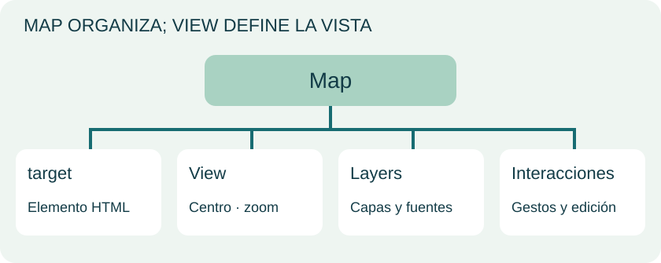
Una clase define propiedades y métodos; una instancia reúne valores y comportamiento. Map organiza capas, controles, interacciones y superposiciones. View gestiona centro, resolución, zoom, rotación y proyección.
target identifica el elemento HTML; el contenedor necesita dimensiones. getView recupera la vista y permite cambiarla sin reconstruir los demás componentes.
El curso muestra biblioteca completa y módulos con npm. En el proyecto modular, las importaciones declaran clases y las herramientas sirven y preparan la aplicación. La notación global ol.* y las importaciones son formas de carga distintas.
Referencia: OpenLayers · guía de inicio.
2. Layer y Source
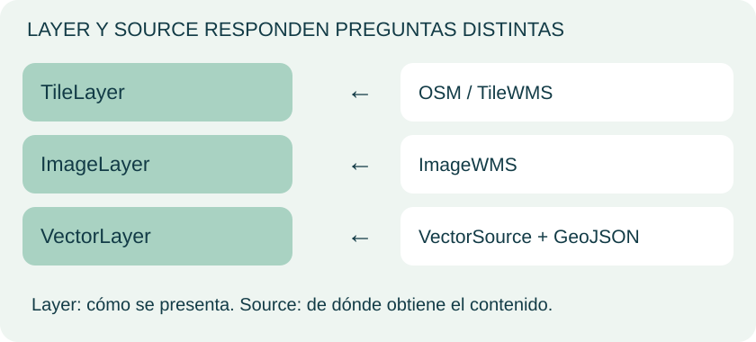
La capa controla presentación, orden, visibilidad y opacidad. La fuente obtiene o conserva el contenido.
| Capa | Fuente del curso | Contenido |
|---|---|---|
| TileLayer | OSM / TileWMS | Imágenes teseladas |
| ImageLayer | ImageWMS | Imagen de una extensión |
| VectorLayer | VectorSource | Entidades |
| VectorTileLayer | VectorTileSource | Entidades teseladas |
| Heatmap | Fuente vectorial | Concentración |
WFS puede alimentar una fuente vectorial. GeoJSON es un formato de intercambio; MVT codifica teselas vectoriales. Teselado no significa necesariamente ráster.
Referencia: OpenLayers · guía de inicio.
3. Coordenadas y proyección
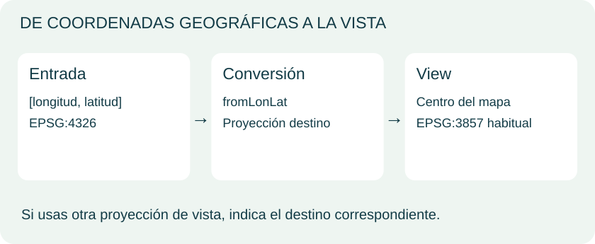
EPSG:3857 es la proyección habitual por defecto. Una coordenada de longitud y latitud no debe interpretarse automáticamente como X e Y de ese sistema.
fromLonLat transforma la entrada geográfica a la proyección destino. Si configuras otra vista, revisa el destino. Distingue la proyección del dato de la proyección con que se representa.
Extensión, resolución y tamaño del mapa están relacionados. Un dato correcto puede quedar fuera de la ventana inicial. Revisa su extensión y transformación antes de concluir que no se ha cargado.
Referencia: OpenLayers · proyecciones.
4. Features, estilos y renderizado
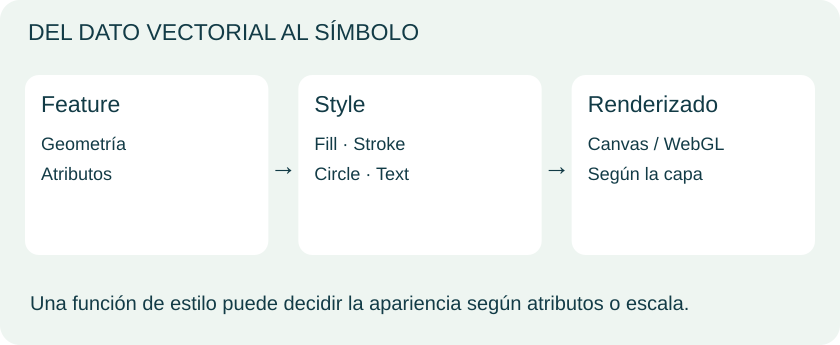
Una feature reúne geometría y propiedades. El estilo decide relleno, trazo, símbolo o texto. Una función puede elegir apariencia según atributos y resolución.
Fill, Stroke, Circle y Text cumplen tareas distintas. Una línea no utiliza relleno de superficie. declutter ayuda a gestionar superposiciones de símbolos o etiquetas en configuraciones compatibles.
Canvas y WebGL están disponibles según capa y versión; no son opciones idénticas para todas las clases. El mapa de calor representa concentración o pesos y necesita interpretar esos valores.
Referencia: OpenLayers · guía de inicio.
5. Controles, selección y dibujo
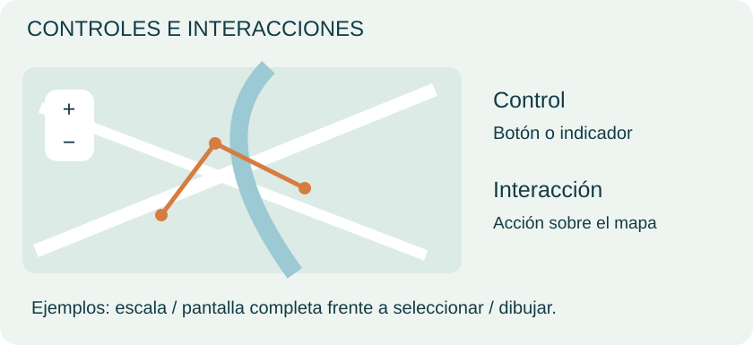
Un control es un elemento visible, como escala o pantalla completa. Una interacción interpreta acciones como seleccionar o dibujar. Una overlay puede situar contenido HTML en una posición.
Seleccionar trabaja con entidades; dibujar crea geometrías. Un cambio en el navegador no se guarda automáticamente en una base de datos: necesita un mecanismo compatible del servidor.
Las 16 prácticas originales construyen progresivamente el visor.
Referencia: OpenLayers · guía de inicio.
6. Preparar los dos entornos del curso
Necesitas editor, navegador, GeoServer y las capas de las unidades anteriores. La práctica comienza con ol_basicMap.html mediante la biblioteca global y continúa con un proyecto de módulos. No mezcles ol.* de la primera vía con clases importadas de la segunda en un mismo archivo sin adaptar el código.
Abrir el ejemplo con biblioteca global
- Crea
ol_basicMap.htmldentro dewwwdel directorio de datos de GeoServer. - Conserva los enlaces a
ol.jsyol.cssde la misma versión que utiliza el contexto original: OpenLayers10.6.1. - Añade el contenedor del mapa con su altura CSS e inicializa el mapa después de ese elemento, siguiendo el código original conservado en el panel de la actividad 1.
- Abre
http://localhost:8080/geoserver/www/ol_basicMap.htmly revisa la consola. El resultado de esa etapa corresponde al primer ejercicio.
Abrir el proyecto modular
- Instala Node.js compatible con la herramienta del proyecto y Git si el generador lo solicita. En una terminal nueva comprueba
node --versionynpm --version. - Si conservas el proyecto del curso con
package.jsony su archivo de bloqueo, abre una terminal en esa carpeta. Ejecutanpm cisi hay un archivo de bloqueo compatible; en caso contrario, utilizanpm install. - Si partes de cero, el generador oficial ofrece esta secuencia. No la ejecutes dentro de un proyecto existente:
- Abre la URL que indique la terminal y mantenla ejecutándose. Comprueba los scripts de tu
package.json: los nombres disponibles dependen de la plantilla.
Un proyecto generado hoy puede utilizar otra versión de OpenLayers. Para reproducir los archivos originales conserva sus dependencias y adapta de forma explícita cualquier diferencia. El servidor de desarrollo y GeoServer suelen tener orígenes distintos: consumir WMS/WFS puede requerir un proxy de desarrollo o CORS configurado en el servicio. No atribuyas ese bloqueo a la proyección.
7. Construir el visor paso a paso
Identificar los archivos y sus responsabilidades
| Archivo o elemento | Revisión |
|---|---|
| HTML de entrada | Incluye el contenedor y carga el módulo JavaScript correcto |
| CSS | El mapa tiene ancho y altura visibles |
| JavaScript | Importa las clases y crea mapa, vista, capas y fuentes |
package.json |
Define dependencias y scripts del entorno |
Los archivos ol_map2.js, ol_map6.js y demás nombres aparecen en las actividades originales. Si utilizas un único archivo de entrada, guarda copias de cada etapa para poder documentarlas sin perder el trabajo previo.
Configurar vista y capas
- Localiza la instancia
View. Revisa centro, zoom, rotación y proyección antes de añadir contenido. - Convierte coordenadas geográficas mediante
fromLonLatcuando la vista utilice el sistema proyectado habitual. No pases longitud/latitud en grados como si fueran metros. - Para WMS crea una capa compatible con su fuente:
TileLayerconTileWMSpara teselas;ImageLayerconImageWMSpara una imagen por extensión. - Configura la URL de tu GeoServer y
LAYERScon el nombre publicado, comoearth:countries. Comprueba primero la capa en GeoServer. - Para los filtros CQL conserva los atributos y valores de
citiesycountriesque pide la práctica. El filtro es una cadena enviada al servicio; revisa en Red qué parámetros se solicitaron.
Cargar entidades y definir su estilo
- Para WFS revisa que la petición devuelve GeoJSON e identifica su CRS. La fuente vectorial debe interpretar el formato y transformarlo a la proyección de la vista cuando corresponda.
- Asocia esa fuente a una capa vectorial y revisa el número de entidades antes de culpar al estilo.
- Aplica relleno, trazo y símbolo según el tipo geométrico. Para etiquetas comprueba el nombre real del atributo.
- Para teselas vectoriales verifica primero que GeoServer sirve MVT; una fuente de GeoJSON no interpreta una tesela MVT.
- Para el mapa de calor utiliza la fuente de puntos original y después ajusta las opciones que exige el ejercicio. Conserva las capas de fondo separadas.
Añadir controles e interacciones
Los controles se incorporan al mapa; las interacciones, como seleccionar o dibujar, necesitan además una capa o fuente de destino cuando corresponda. Comprueba qué objeto recibe el resultado. Dibujar en el navegador no guarda por sí solo una entidad en PostGIS.
| Problema | Comprobación |
|---|---|
ol is not defined en un módulo |
Utiliza las clases importadas; no la notación global de la etapa inicial |
| Módulo no encontrado | Dependencias instaladas, ruta y mayúsculas exactas del import |
| Mapa desplazado | Centro convertido y proyecciones de fuente y vista |
| Servicio bloqueado | Consola, CORS, URL y configuración de proxy |
| Capa vectorial vacía | Respuesta WFS, formato, filtro y extensión |
| Dibujos desaparecen al recargar | Falta un mecanismo de persistencia; no equivale a guardar en la base |
Guarda cada etapa y sus capturas. Al finalizar conserva las capas y el entorno; la próxima unidad reutiliza sus servicios desde MapStore.
Fuentes: práctica original de OpenLayers de MappingGIS · OpenLayers · proyecto y archivos de entrada · proyecciones y preguntas frecuentes.
Material y referencias
Ampliación técnica: Inicio oficial de OpenLayers · Proyecciones y preguntas frecuentes. Las versiones e interfaces del PDF corresponden al entorno de las clases; los diagramas muestran conceptos.
Antes de resolver las actividades
Completa la preparación y los procedimientos anteriores. Después avanza por los ejercicios en su orden original: varias actividades utilizan archivos, capas o cambios de las anteriores. Cada actividad conserva su enunciado y sus paneles de instrucciones y capturas dentro de la página; el PDF queda como respaldo.
Si una consigna menciona «el código anterior» o «la imagen anterior», abre su panel de contexto antes de trabajar. Comprueba qué archivo o recurso debes modificar, guarda el cambio y verifica el resultado antes de tomar la captura. No ejecutes de nuevo una creación o importación si ya existe el objeto correspondiente.
Ejercicio Unidad 6
Enunciados y contexto de los PDF de MappingGIS. No se añaden actividades ni soluciones. Los paneles incluyen los pasos originales dentro de la unidad; el PDF conserva la maquetación completa.
Práctica: PDF original completo.
Ejercicio 1 · Primer mapa
Pega el resultado de tu primer mapa realizado con OpenLayers (ol_basicMap.html) en la plantilla de resultados.
Pasos y contexto originales de la clase
Página 3
Ejercicio 6. OpenLayers
3
Diferentes formas de trabajar con OpenLayers
Como hemos visto en la presentación de este tema hay varias formas de trabajar
con OpenLayers:
1. Utilizando su librería, bien mediante la descarga de los archivos o bien
mediante un enlace CDN. Se trata en ambos casos de incorporar los archivos
ol.js y ol.css al HTML de nuestra aplicación.
<script src="https://cdn.jsdelivr.net/npm/ol@v10.6.1/dist/ol.js"></script>
<link rel="stylesheet" href="https://cdn.jsdelivr.net/npm/ol@v10.6.1/ol.css">
2. El método descrito en el apartado anterior no es el más aconsejable. En
entornos de producción se suele optar por utilizar Open Layers mediante
Node.js.
A continuación, vamos a proceder a explicar este esquema de posibles
arquitecturas. En el estudi o posterior que hagamos de OpenLa yers crearemos un
mapa básico utilizando los dos métodos, aunque luego nos centraremos en el que
utiliza node por ser la forma actual de trabajar y en la que se muestran los ejemplos
de la página web de OpenLayers: https://openlayers.org/en/latest/examples/
Página 4
Ejercicio 6. OpenLayers
4
La forma tradicional de utilizar OpenLayers (y quizá más sencilla pues no necesita
ninguna instalación ) era utilizando la librería mediante sus enlaces CDN a los
archivos ol.js y ol.css. En este caso solo necesitamos escribir un código HTML, con
sus elementos css para los e stilos y JavaS cript para la creación del mapa. Este
archivo puede contener o no serv icios WMS, WFS… creados por GeoS erver. En ese
caso para poder visualizar el mapa debemos abrirlo desde el servidor para evitar
los problemas de la directiva CORS ( Intercambio de Recursos cruzados). Esto en la
práctica significa que nuestro archivo html no lo podemos abrir directamente desde
el navegador. Tenemos que guardar el archivo en la carpeta \data_dir\www (la de
los datos de GeoServer).
Para entornos de producción actualmente es preferible utilizar node para crear el
mapa, aunque mejor sería decir, para crear el proyecto. La ventaja de utilizar node
es que nos permite utilizar módulos . De esta forma solo emplearemos aquella
parte de OpenLayers (módulos) que necesitemos para nuestro proyecto. Podremos
exportar nuestro proyecto generando los archivos para subir al servidor. Y otra
ventaja importante es que node no s proporciona un servidor local en el que
podemos ver nuestro mapa. Lógicamente los servicios que hemos creado en
GeoServer (WMS, WFS, WCS…) tienen que estar disponibles en el mapa, por lo tanto,
GeoServer debe estar funcionando.
Cuando trabajemos con node tendremos dos servidores en funcionamiento:
1. El servidor GeoServer que nos suministra nuestro en mapas con los servicios
OGC. http://localhost:8080/geoserver
2. El servidor de node en el que visualizaremos los mapas de OpenLayers.
http://localhost:5173
Página 5
Ejercicio 6. OpenLayers
5
Uso de la librería de OpenLayers
Vamos a crear y previsualizar un ejemplo sencillo y totalmente funcional de un mapa
de OpenLayers utilizando la librería mediante un enlace CDN a los archivos ol.js y
ol.css.
Crea un nuevo archivo en el directorio www y d enomínalo ol_basicMap.html por
lo que la ruta en la que se ubicará será \data_dir\www\ol_basicMap.html
Abre este archivo con un editor de texto como Notepad++ o Sublime Text 2.
En la primera línea escribimos:
<!doctype html>
para indicar que será un documento basado en HTML5.
La cabecera <head>
En la segunda línea añadimos la cabecera <head>.
En la tercera línea (dentro del head), cargaremos los archivos JavaScript y CSS que
serán incluidos con el mapa:
La librería JavaScript de OpenLayers (ol.js):
<script src="https://cdn.jsdelivr.net/npm/ol@v10.6.1/dist/ol.js"></script>
Seguido por una hoja de estilo por defecto (ol.css) que especifica el estilo:
<link rel="stylesheet" href="https://cdn.jsdelivr.net/npm/ol@v10.6.1/ol.css">
Como hemos visto en la presentación, hay dos maneras de apuntar a la librería de
OpenLayers, para este ejercicio nos limitamos a apuntar a la página web
openlayers.org para obtener toda la librería. En un en torno de producción,
construiríamos una versión personalizada de la biblioteca incluyendo sólo los
módulos necesarios para nuestra aplicación.
A continuación, incluiremos el estilo que tendrá nuestro marco del mapa:
Página 6
Ejercicio 6. OpenLayers
6
<style>
#map {
width: 100%;
height: 400px;
box-shadow: 5px 5px 5px #888;
}
</style>
En este estilo estamos indicando que nuestro mapa tiene un ancho del 100 % de la
ventana del navegar. Un alto de 400 pixeles y para hacerlo más atractivo utilizamos
la propiedad box-shadow de CSS, que produce un efecto de sombra en los bordes
inferior y derecha.
Después del estilo ya podemos cerrar la etiqueta head:
</head>
Por el momento el código que tenemos es este:
<!DOCTYPE html>
<html>
<head>
<script src="https://cdn.jsdelivr.net/npm/ol@v10.6.1/dist/ol.js"></script>
<link rel="stylesheet" href="https://cdn.jsdelivr.net/npm/ol@v10.6.1/ol.css">
<style>
#map{
width: 100%;
height: 400px;
box-shadow: 5px 5px 5px #888;
}
</style>
</head>
El cuerpo del archivo <body>
Crearemos a continuación la etiqueta <body>, y dentro incluimos un título para la
página web:
<h1>Mi primer mapa con ol</h1>
Y añadimos el elemento de HTML <div>
<div id= 'map'></div>
Página 7
Ejercicio 6. OpenLayers
7
Dentro del elemento de HTML <div> incluimos la aplicación de mapa. Gracias a este
div las propiedades del mapa como anchura, altura o borde pueden ser controladas
a través de estilos CSS, como hemos visto.
El código JavaScript <script>
Nota: El código JavaScript va siempre entre las etiquetas <script> y </script>.
En primer lugar, creamos una variable que contendrá el objeto Map
var map = new ol.Map({
Como hemos visto en la teoría ol.Map es la clase que permite manejar el concepto
de mapa en nuestra aplicación. Podemos añadir o eliminar capas, controles,
superposiciones e interacciones (layers, controls, overlays e interactions).
La siguiente línea define la propiedad target que es el elemento HTML de destino,
donde se representará el mapa.
target: 'map',
Vamos con la propiedad layers, que hace referencia a la capa o capas que se
mostrarán. Siempre debemos incluir la capa entre corchetes:
layers: [osm]
En OpenLayers debemos definir un tipo de capa (imagen, teselas o vectorial) que
contendrá una fuente. La fuente es el protocolo necesario para recuperar las teselas
de mapa.
En este primer ejercicio añadimos una capa teselada, cuya fuente es la de las teselas
de OpenStreetMap.
layers: [
new ol.layer.Tile({
source: new ol.source.OSM()
})
],
La siguiente parte del objeto map es la vista (view). La clase ol.View es la responsable
de fijar el centro, el nivel de zoom, la proyección del mapa o el ángulo de rotación.
Página 8
Ejercicio 6. OpenLayers
8
Escribimos:
view: new ol.View({
Para instanciar una nueva vista. Después especificamos un centro y un zoom para
tener una instancia de vista completa.
center: ol.proj.fromLonLat([-4.72, 41.66]),
zoom: 7
})
});
Fíjate que especificamos un centro en coordenadas geográficas longitud/latitud
(WGS84 - EPSG:4326). El método ol.proj.fromLonLat() sirve para proyectar las
coordenadas geográficas en coordenadas planas (metros) en el EPSG:3857,
que es el EPSG que utiliza OpenLayers.
Con esto finalizamos el script, el cuerpo y el HTML:
</script>
</body>
</html>
Para no perdernos veamos cómo quedaría la parte del body:
<body>
<h1>Mi primer mapa con ol</h1>
<div id="map"></div>
<script>
var map = new ol.Map({
target: 'map',
layers: [
new ol.layer.Tile({
source: new ol.source.OSM()
})
],
view: new ol.View({
center: ol.proj.fromLonLat([-4.72, 41.66]),
zoom: 7
})
});
</script>
</body>
Página 9
Ejercicio 6. OpenLayers
9
Y el código completo:
<!DOCTYPE html>
<html>
<head>
<script src="https://cdn.jsdelivr.net/npm/ol@v10.6.1/dist/ol.js"></script>
<link rel="stylesheet" href="https://cdn.jsdelivr.net/npm/ol@v10.6.1/ol.css">
<style>
#map{
width: 100%;
height: 400px;
box-shadow: 5px 5px 5px #888;
}
</style>
</head>
<body>
<h1>Mi primer mapa con ol</h1>
<div id="map"></div>
<script>
var map = new ol.Map({
target: 'map',
layers: [
new ol.layer.Tile({
source: new ol.source.OSM()
})
],
view: new ol.View({
center: ol.proj.fromLonLat([-4.72, 41.66]),
zoom: 5
})
});
</script>
</body>
</html>
Ejercicio nº 1. Pega el resultado de tu primer mapa realizado con OpenLayers
(ol_basicMap.html) en la plantilla de resultados.
Ver página 9 del PDF original, con sus capturas
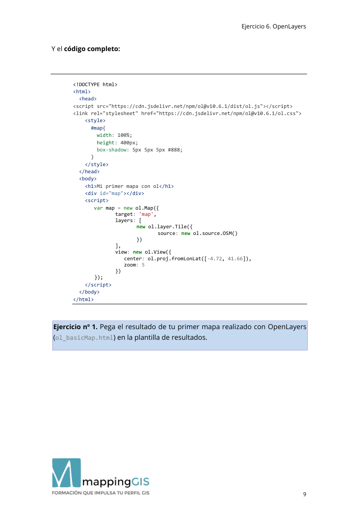
Consultar en el PDF · página 9
Ejercicio 2 · Vista y rotación
Verifica que funciona el mapa y realiza los siguientes cambios: 1. Añade a Mivista la opción rotation con un valor de Math.PI / 6. 2. Utiliza el método setZoom para cambiar el nivel de zoom a 2. Sube una captura de pantalla del código ol_map2.js en el editor de texto a la plataforma de formación.
Pasos y contexto originales de la clase
Página 9
Ejercicio 6. OpenLayers
9
Y el código completo:
<!DOCTYPE html>
<html>
<head>
<script src="https://cdn.jsdelivr.net/npm/ol@v10.6.1/dist/ol.js"></script>
<link rel="stylesheet" href="https://cdn.jsdelivr.net/npm/ol@v10.6.1/ol.css">
<style>
#map{
width: 100%;
height: 400px;
box-shadow: 5px 5px 5px #888;
}
</style>
</head>
<body>
<h1>Mi primer mapa con ol</h1>
<div id="map"></div>
<script>
var map = new ol.Map({
target: 'map',
layers: [
new ol.layer.Tile({
source: new ol.source.OSM()
})
],
view: new ol.View({
center: ol.proj.fromLonLat([-4.72, 41.66]),
zoom: 5
})
});
</script>
</body>
</html>
Ejercicio nº 1. Pega el resultado de tu primer mapa realizado con OpenLayers
(ol_basicMap.html) en la plantilla de resultados.
Página 10
Ejercicio 6. OpenLayers
10
Directiva CORS
Antes de continuar debemos detenernos un poco en el control de acceso HTTP
(CORS). Se trata de una directiva de seguridad que impide que se puedan realizar
peticiones cruzadas a distintos dominios web. En la práctica esto implica que si
desde el código que hemos creado en OpenLayers intentásemos llamar a algunos
de los mapas que tenemos en GeoServer obtendríamos un error.
Con el mapa ol_basicMap.html anterior no tendríamos ese problema porque no
estamos utilizando ningún recurso externo.
Para solventar este problema podemos hacer que GeoServer elimine la referencia
a CORS. Para ello hay que hacer lo siguiente:
1. Abre con un editor de texto el archivo web.xml de GeoServer (C:\GeoServer
2.26.0\webapps\geoserver\WEB-INF). Te aconsejamos que hagas una copia
de este archivo antes de empezar la edición como medida de seguridad.
2. Busca la línea:
<filter-name>cross-origin</filter-name>
Hay que descomentar este apartado de tal forma que quede como sigue:
Como ves, se descomenta la sección comprendida entre las dos etiquetas
<filter>
Página 11
Ejercicio 6. OpenLayers
11
Descomentamos esta parte porque estamos utilizando un servidor jetty. En
el caso de utilizar Tomcat, en lugar de esta sección descomentaríamos la siguiente.
3. Descomenta también la siguiente sección:
4. Guarda los cambios antes de salir del editor de texto.
Es necesario reiniciar el ordenador para que los cambios tengan efecto.
De esta forma hemos eliminado la directiva CORS en GeoServer y podremos realizar
las peticiones a nuestros mapas sin problemas.
Página 12
Ejercicio 6. OpenLayers
12
Instalar Node
Como hemos indicado antes, en entornos de producción se aconseja trabajar con
Node.
Node.js es un entorno de desarrollo y ejecución de aplicaciones JavaScript. Podemos
simplificar la definición de lo que es node diciendo que es “JavaScript en el servidor”.
Node crea un entorno de desarrollo modular. Los módulos de O penLayers son las
partes (clases) de las que se compone. El desarrollo en módulos permite utilizar solo
aquellas partes de la librería que nos interesan en nuestro proyecto concreto ,
prescindiendo del resto, lo que hace la aplicación más ligera.
Vemos a continuación cómo se instala node en Windows. Lo primero es acudir a la
página de node.
https://nodejs.org/en/download/
Descargamos la versión LTS (Estable). La principal diferencia con la versión Actual
(current) es el tiempo de actualización. La versión actual recibe actualizaciones
constantes mientras que la versión de largo plazo nos permite tener una versión de
node sin tener que preocuparnos de las actualizaciones.
Página 13
Ejercicio 6. OpenLayers
13
Seleccionamos el sistema operativo y la arquitectura y descargamos el archivo msi.
Una vez descargado el archivo .msi, lo ejecutamos.
Se abrirá la ventana de instalación:
Hacemos clic en Next
Aceptamos la licencia de uso. Next.
Página 14
Ejercicio 6. OpenLayers
14
Confirmamos el directorio para instalar node.
A continuación , nos muestra una selección de elementos para instalar . Los
elementos fundamentales son Node.js y npm que es el gestor de paquetes.
Npm (Node Package Manger ) viene incluido en la descarga y es una herramienta
fundamental para trabajar con node, porque act úa como un repositorio que nos
permite instalar y desinstalar paquetes, así como gestionar las dependencias del
proyecto.
Mantenemos la propuesta que nos ofrece y hacemos clic en Next.
Página 15
Ejercicio 6. OpenLayers
15
En la ventana de selección de herramientas hacemos clic en Next. No es necesario
seleccionar la opción que nos ofrece.
Hemos llegado a la ventana de confirmación de la instalación. Hacemos clic en:
Install y comienza la instalación.
Página 16
Ejercicio 6. OpenLayers
16
Para comprobar que la instalación ha tenido éxito, abrimos una ventana símbolo de
sistema y escribimos node –v. Como resultado obtendremos la versión de node
instalada:
Página 17
Ejercicio 6. OpenLayers
17
Instalación de OpenLayers
Una vez que tenemos instalado node, procedemos a la instalación de OpenLayers.
Más que la descarga o instalación de OpenLayers , podemos decir que nos crea una
aplicación con OpenLayers, pues como veremos este proceso nos descarga los
paquetes de OpenLayer y nos crea los archivos qu e necesitamos pare ha cer un
mapa.
El proceso de instalación de OpenLayers se compone de tres pasos:
1º paso. Abrimos una ventana de comandos y nos situamos en nuestra carpeta
webmapping, A continuación, escribimos:
npm create ol-app openlayers-app
Estamos utilizando el comando create de npm para crear una aplicación de
OpenLayers y además estamos indicando que nos lo haga en una carpeta
llamada openlayers-app. Por supuesto puedes utilizar el nombre que quieras.
Esto es todo lo que te nemos que hacer para descargar OpenL ayers y crear la
aplicación.
Recibiremos un mensaje similar al que vemos en la imagen anterior.
Requisitos: Para instalar Openlayers como se indica aquí y se recomienda en la
documentación de OpenLayers es necesario que tengamos instalado GIT.
Puedes descargarlo en el siguiente enlace:
https://github.com/git-guides/install-git
La instalación de GIT es muy sencilla, pero si tienes alguna duda puedes seguir
la guía que se incluye en la plataforma del curso y que encontrarás al final del
tema de OpenLayers.
Página 18
Ejercicio 6. OpenLayers
18
Ahora, abre tu carpeta webmapping, verás que tiene una nueva carpeta llamada
openlayers-app que contiene lo siguiente:
2º paso. Nos dirigimos a la carpeta openlayers-app
cd openlayers-app
3º paso. Iniciamos la aplicación.
npm start
Esta operación nos permite ver la aplicación en un servidor de desarrollo VITE.
Abre tu navegador preferido y escribe la dirección http://localhost:5173/
Verás tu primer mapa con OpenLayers.
Página 19
Ejercicio 6. OpenLayers
19
Contenido de la aplicación
Como explicamos en el apartado anterior al crear la aplicación con OpenLayers se
crearon varios archivos y carpetas. Tres son los archivos principales:
- Un archivo html (index.html). Es el que se encarga de crear la página web e iniciar
la aplicación.
- Un archivo JavaScript (main.js). Es el que contiene el código de OpenLayers, y por
tanto el que crea el mapa. Será el archivo sobre el que más trabajaremos.
- Un archivo css ( style.css). Se encarga de configurar los estilos o presentación de
la página web.
Index.html
Abre en un editor de texto el archivo index.html para ver su contenido. Como vemos
a continuación, es muy sencillo, pues solo tiene la estructura básica de un html. En
el script incluye la referencia al archivo main.js que es el que contiene la aplicación.
Página 20
Ejercicio 6. OpenLayers
20
Las primeras líneas del código son el componente html de nuestra página web.
En head definimos la codificación de caracteres (UTF -8) y damos un título. Un
elemento fundamental de este archivo es que creamos un <div> con el id="map".
Este elemento es el que se encarga de crear un área dentro de la página web para
albergar el mapa. Como veremos, en el archivo main.js se hace referencia a este id
mediante el parámetro "target".
main.js
Abre ahora en el editor de texto main.js para ver su contenido.
La principal diferencia con respecto al script que vimos en el primer ejercicio es que
aquí utilizamos import para llamar a los módulos que necesitamos de OpenLayers.
Una de las características de Node es que nos permite utilizar solo las partes de la
Página 21
Ejercicio 6. OpenLayers
21
librería (módulos) que necesitamos para cada proyecto, esto convierte las
aplicaciones en elementos más ligeros y por lo tanto más rápidos.
import './style.css'; para importar los estilos css.
import {Map, View} from 'ol'; para importar las clases Map y View.
import TileLayer from 'ol/layer/Tile'; para incorporar capas teseladas.
import OSM from 'ol/source/OSM'; para añadir el recurso de OpenstreetMap.
Con estos módulos tenemos lo suficiente para crear un mapa que utilice a
OpenStreetMap como mapa base.
La otra diferencia con relación al mapa en el que utilizamos la librería de
OpenLayers es la forma en que escribimos las clases.
OpenLayers librería Openlayers node
ol.Map Map
ol.View View
ol.layer.Tile Tilelayer
ol.source.OSM() OSM()
style.css
Veamos su contenido en el editor de texto.
Página 22
Ejercicio 6. OpenLayers
22
El archivo de estilos css contiene los estilos de la página web.
Publicar el mapa
Con el proceso seguido hasta aquí podemos ver el mapa en nuestro equipo. Para
publicarlo en la web necesitamos los archivos para subir al servidor.
Creamos un paquete con la aplicación. Escribimos en la ventana de comandos el
siguiente:
npm run build
Como resultado se crea un directorio /dist que contiene todos los archivos que
necesitamos para publicar el mapa.
Página 23
Ejercicio 6. OpenLayers
23
En la imagen anterior vemos como es la estructura de archivos resultado del
proceso que hemos realizado.
Copiamos la carpeta dist en nuestro directorio /www de GeoServer, es decir en la
ruta:
C:\data_dir\www
Para no tener problemas con las rutas a los archivos contenidos en assets vamos a
editar el archivo html
Abre el archivo c:\data_dir\www\dist\index.html en el editor de texto y elimina
la / que hay al principio de las urls de los archivos index.js y index.css
Guarda los cambios cuando lo tengas.
Ahora podremos ejecutar la aplicación también desde el navegador: escribiendo en
la barra del navegador:
http://localhost:8080/geoserver/www/dist/index.html
Una cuestión importante que debes tener en cuenta: La carpeta dist que hemos
creado es una carpeta para publicación del mapa en la web. Podemos considerar ,
por tanto, que se trata de un proyecto cerrado o si lo prefieres de otra forma como
de un trabajo terminado. En esa carpeta NO DEBES TRABAJAR, a partir de ahora.
El resto de códigos que vas a utilizar se corresponde n con una etapa de
DESARROLLO. Por lo ta nto, los archivos que vas a modificar a partir de ahora son
Página 24
Ejercicio 6. OpenLayers
24
index.html, style css y los archivos .js que tengas en la carpeta openlayers -app. No
los confundas con los de la carpeta dist.
Recapitulación de la arquitectura utilizada
Ahora que hemos visto todos los elementos que necesita nuestra aplicación vamos
a repasar las herramientas que hemos utilizado para intentar dar una visión de
conjunto de la arquitectura que estamos utilizando.
Por un lado estamos trabajando con Geoserver, que es nuestro servidor de
mapas y lo podemos empelar como SERVIDOR DE PRODUCCIÓN. Y por otro lado
tenemos el servidor de Node (VITE) que utilizamos PARA EL DESARROLLO.
Vamos a intentar que queden claras las diferencias entre ambos.
¿Para qué utilizamos GeoServer?
GeoServer, como vimos en el tema 3, es un servidor web que nos permite servir
mapas y datos desde una variedad de formatos a clientes estándar tales como
navegadores web y programas GIS de escritorio.
Hasta la unidad 5, lo que hemos estado haciendo es construir multitud de
mapas en distintos formatos (WMS, WFS...) que hemos servido desde
nuestro servidor local y consumido desde QGIS o desde el navegador.
Como vimos en su momento, GeoServer es una aplicación web construida dentro
de Jetty que es un servidor de aplicaciones ligero y portátil. Entonces, siempre que
quieras consumir mapas (desde cualquier sitio , QGIS, ARCGIS, aplicaciones
WEB....etc) debes levantar Geoserver con el fichero startup.bat. Al ejecutar este
fichero, estamos levantando un servidor de producc ión Jetty con la aplicación
GeoServer. Y es por eso que en realidad podemos desplegar más aplicaciones
dentro (es lo que hacemos después cuando nos traemos la carpeta dist). Pero
antes, es importante entender que es node.js y el por qué lo
empleamos.
¿Para qué utilizamos node?
Node es un entorno multiplataforma open source de tiempo de ejecución de
JavaScript, que se ejecuta del lado del servidor. Hasta la creación de Node.js, el
lenguaje de programación JavaScript únicamente podía ejecutarse del lado del
Página 25
Ejercicio 6. OpenLayers
25
navegador. Node.js sirve para crear sitios web dinámicos muy eficientes, escritos
con el lenguaje de programación JavaScript.
¿Para qué utilizamos npm?
NPM actúa como un repositorio que nos permite inst alar y
desinstalar paquetes, así como gestionar las dependencias del proyecto.
Y una vez que hemos creado el proyecto, instalamos las dependencias que
vayamos a usar en nuestro proyecto. En nuestro caso hemos instalado dos:
-OpenLayers
- Vite.
¿Para qué utilizamos Openlayers?
Openlayers es una biblioteca Javascript que nos permite construir mapas
y que contiene mucha funcionalidad espacial. En definitiva, es la herramienta que
nos permite construir los mapas para publicarlos en la web.
¿Para qué utilizamos Vite?
Vite es una herramienta de compilación que tiene como objetivo proporcionar una
experiencia de desarrollo más rápida y ágil para proyectos web modernos. Consta
de dos partes principales:
Un servidor de desarrollo que proporciona mejoras enriquecidas de
funcionalidades sobre módulos ES nativos.
Un comando de compilación que empaqueta tu código con Rollup,
preconfigurado para generar recursos estáticos altamente optimizados para
producción.
Cuando nuestro proyecto está acabado creamos la aplicación con el comando npm
run build. Ahora bien, es algo molesto que cada vez que realicemos un cambio
tengamos que ejecutar este comando para "transformar" el código y desplegarlo en
un servidor en producción para ver lo que hemos cambiado. Es por eso que
tenemos la opción de trabajar con un pequeño servidor interno que nos muestra
los cambios en tiempo real que únicamente debe usarse mientras desarrollamos.
Se ejecuta con el comando npm start y por defecto se muestra en la ruta
localhost:5173.
Para ser más prácticos, imagina que estás desarrollando un proyecto . Mientras
desarrollas tu proyecto, debes tener levantado el servidor de desarrollo
Página 26
Ejercicio 6. OpenLayers
26
node (npm start) y si en tu proyecto consumes mapas de Geoserver,
deberás tener también levantado Geoserver. Una vez que termine tu
desarrollo o tengas una primera versión estable de tu aplicación web,
deberás compilar tu proyecto node (npm run build). Y para que puedas ver en
producción tu aplicación deberás desplegarla en un servidor. Puedes usar
cualquiera: Apache, Jetty... etc. Nosotros en el curso reaprovechamos el servidor de
Geoserver (que es Jetty).
Trabajando con los módulos de OpenLayers
En el archivo main.js que h abíamos creado en la aplicación anterior , hemos
definido como coordenadas del centro del mapa [0,0]. Si queremos utilizar otras
coordenadas y definiendo un sistema de proyección como hicimos en
ol_basicMap.html necesitaremos utilizar la clase correspondiente:
ol.proj.fromLonLat(). Esto implica qu e tendremos que utilizar un nuevo módulo.
En la página de documentación de OpenLayers
https://openlayers.org/en/latest/apidoc/
Escribimos el nombre de la clase: fromLonLat()
Hacemos clic sobre el método y nos muestra el módulo que tenemos que importar:
Paso 1: Abre el archivo main.js y lo editas de la siguiente forma:
Importa el módulo que vimos antes en la documentación de OpenLayers:
import {fromLonLat} from 'ol/proj';
Página 27
Ejercicio 6. OpenLayers
27
En la vista modifica las coordenadas para que queden así:
center:fromLonLat([-4.72, 41.66]),
Como puedes observar estamos utilizando el método fromLonLat y a continuación
estamos definiendo las nuevas coordenadas.
Guarda este archivo como ol_map1.js
El código completo de este archivo es:
Paso 2: Como el punto de entrada de nuestra aplicación es index.html deberemos
modificar este archivo para que apunte al código que hemos creado.
Por lo tanto, debes editar index.html y modificar el script por el siguiente:
<script type="module" src="./ol_map1.js"></script>
Paso 3: Visualiza el mapa en http://localhost:5173/
Este paso en realidad se hace de forma automática, de tal manera que cada vez que
hagas un cambio en index.html o en los archivos .js estos cambios se reflejaran de
forma inmediata en la vista del navegador.
Página 28
Ejercicio 6. OpenLayers
28
Estos pasos que hemos seguido son los que repetiremos en el resto de ejercicios:
Haz una copia del mapa anterior y renómbralo a ol_map2.js.
Vamos a crear una variable denominada MiVista. Esta variable contendrá la clase
instanciada View con las propiedades de centro y zoom:
var Mivista = new View({
center: fromLonLat([-4.72, 41.66]),
zoom: 5
});
Ahora vamos al objeto map y modificamos el valor de la propiedad view para incluir
la variable MiVista:
const map = new Map({
layers: …
target: …
view: Mivista
});
Crear un objeto Mivista, como hemos hecho aquí, presenta algunas ventajas. Por
ejemplo, si deseamos modificar el nivel de zoom definido al principio podemos
utilizar algunos de los métodos de OpenLayers, como setZoom().
Mivista.setZoom(2);
Edita index.html para cambiar el script a:
<script type="module" src="./ol_map2.js"></script>
Abre el mapa en tu navegador web:
http://localhost:5173
Editar códigos
ol_map*.js
Editar
index.html
Visualizar
http://localhost:5173
Página 29
Ejercicio 6. OpenLayers
29
Ejercicio nº2. Verifica que funciona el mapa y realiza los siguientes cambios:
1. Añade a Mivista la opción rotation con un valor de Math.PI / 6.
2. Utiliza el método setZoom para cambiar el nivel de zoom a 2.
Sube una captura de pantalla del código ol_map2.js en el editor de texto a la
plataforma de formación.
Ver página 29 del PDF original, con sus capturas
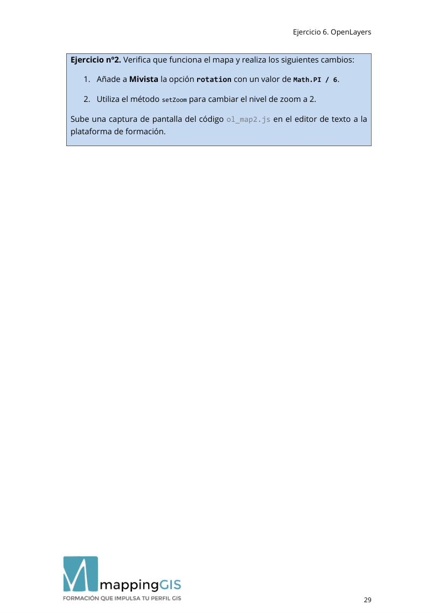
Consultar en el PDF · página 29
Ejercicio 3 · Capas cities y countries
Crea un mapa que contenga las capas cities y countries y haz una captura de pantalla.
Pasos y contexto originales de la clase
Página 29
Ejercicio 6. OpenLayers
29
Ejercicio nº2. Verifica que funciona el mapa y realiza los siguientes cambios:
1. Añade a Mivista la opción rotation con un valor de Math.PI / 6.
2. Utiliza el método setZoom para cambiar el nivel de zoom a 2.
Sube una captura de pantalla del código ol_map2.js en el editor de texto a la
plataforma de formación.
Página 30
Ejercicio 6. OpenLayers
30
Añadiendo capas teseladas desde un servidor WMS
OpenLayers nos ofrece fuentes para añadir imágenes de servidores que c umplen
con la OGC, utilizando los estándares WMS y WMST.
Vamos a visualizar nuestras capas de GeoServer basadas en el estándar WMS, que
nos permite servir imágenes de mapa georreferenciadas.
OpenLayers ofrece dos posibles clases para realizar peticiones a servidores WMS:
ol/layer/Image
ol/layer/Tile
Capas de imágenes – ol/Image
La clase Image tiene como fuente para servidores WMS la clase ImageWMS y acepta los
siguientes parámetros:
attributions, crossOrigin, ratio, resolutions
url: La URL del servicio WMS que será consultado.
params: es un objeto donde debemos especificar muchos de los parámetros
de la operación GetMap, como son:
o LAYERS (obligatorio)
o VERSION (por defecto 1.3.0)
o TRANSPARENT
o STYLES (por defecto ‘’)
o WIDTH
o HEIGHT
o BBOX
o CRS (o SRS para la versión WMS < 1.3.0).
Copia el mapa ol_map2.js a un archivo nuevo y renómbralo a ol_map3.js
Añade los módulos correspondientes a Image y ImageWMS:
import ImageWMS from 'ol/source/ImageWMS.js';
import {Image} from 'ol/layer';
Página 31
Ejercicio 6. OpenLayers
31
Creamos la capa cities de la siguiente forma:
var cities = new Image({
source: new ImageWMS({
url: 'http://localhost:8080/geoserver/wms',
params: {
'LAYERS': 'cities',
'FORMAT': 'image/png'
},
})
});
Añade esta capa al mapa:
var map = new Map({
…
layers: [cities],
…
});
Si en lugar de añadir una capa, deseamos añadir más capas, debemos incluirlas en
una lista separada por comas:
layers: [capa1, capa2, capa3, capa4],
Ejercicio nº3. Crea un mapa que contenga las capas cities y countries y haz
una captura de pantalla.
Añadiendo filtros ECQL
Acabamos de ver la opción params en la que especificamos muchos de los
parámetros de la operación GetMap (LAYERS, VERSION, FORMAT).
GeoServer admite además una variedad de parámetros WMS no estándar, pero
proporcionan capacidades mejoradas. Uno de estos parámetros es cql_filter
El parámetro cql_filter es similar al parámetro de filtro estándar, pero en este caso
el filtro se expresa mediante el lenguaje ECQL (Extended Common Query Language).
ECQL proporciona una sintaxis más compacta y legible en comparación con los
filtros XML de la OGC. Para obtener más detalles, consulta la ECQL Reference y el
tutorial de CQL y ECQL.
Ver página 31 del PDF original, con sus capturas
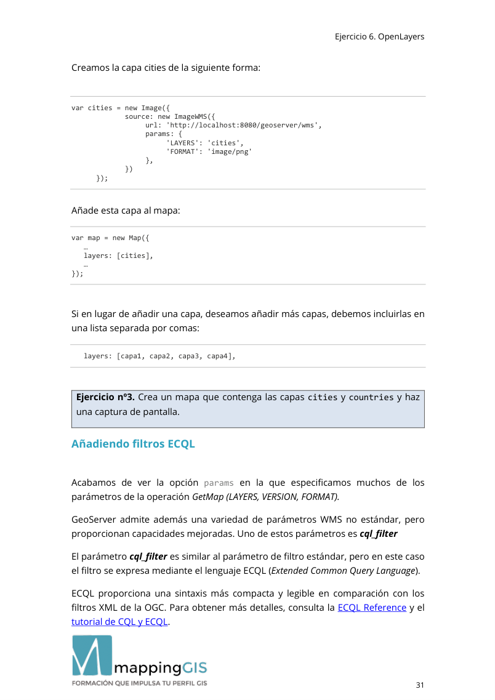
Consultar en el PDF · página 31
Ejercicio 4 · Filtros CQL
Añade el parámetro cql_filter a las dos capas WMS del ejercicio anterior y selecciona en la capa de ciudades la ciudad Madrid y en la de países el país Spain. Haz una captura de pantalla que muestre las capas con sus filtros.
Pasos y contexto originales de la clase
Página 31
Ejercicio 6. OpenLayers
31
Creamos la capa cities de la siguiente forma:
var cities = new Image({
source: new ImageWMS({
url: 'http://localhost:8080/geoserver/wms',
params: {
'LAYERS': 'cities',
'FORMAT': 'image/png'
},
})
});
Añade esta capa al mapa:
var map = new Map({
…
layers: [cities],
…
});
Si en lugar de añadir una capa, deseamos añadir más capas, debemos incluirlas en
una lista separada por comas:
layers: [capa1, capa2, capa3, capa4],
Ejercicio nº3. Crea un mapa que contenga las capas cities y countries y haz
una captura de pantalla.
Añadiendo filtros ECQL
Acabamos de ver la opción params en la que especificamos muchos de los
parámetros de la operación GetMap (LAYERS, VERSION, FORMAT).
GeoServer admite además una variedad de parámetros WMS no estándar, pero
proporcionan capacidades mejoradas. Uno de estos parámetros es cql_filter
El parámetro cql_filter es similar al parámetro de filtro estándar, pero en este caso
el filtro se expresa mediante el lenguaje ECQL (Extended Common Query Language).
ECQL proporciona una sintaxis más compacta y legible en comparación con los
filtros XML de la OGC. Para obtener más detalles, consulta la ECQL Reference y el
tutorial de CQL y ECQL.
Página 32
Ejercicio 6. OpenLayers
32
La sintaxis es:
cql_filter=filter1;filter2...
Que aplicado a OpenLayers y utilizando una operación de comparación sería:
'cql_filter': "name = 'Spain'"
De este modo restringimos la visualización a un único objeto espacial de la capa (en
este caso el país de España de la capa de países).
Para incluir una lista de valores en la consulta podemos hacer uso del operador
IN y a continuación, dentro del paréntesis el listado de nombres. Por lo que la
consulta quedaría así:
'cql_filter': "name IN ('Madrid','Paris')"
Copia el mapa ol_map3.js a un archivo nuevo y renómbralo a ol_map4.js. Como
siempre no olvides actualizar el archivo index.html :
<script type="module" src="./ol_map4.js"></script>
Ejercicio nº 4. Añade el parámetro cql_filter a las dos capas WMS del ejercicio
anterior y selecciona en la capa de ciudades la ciudad Madrid y en la de países el
país Spain.
Haz una captura de pantalla que muestre las capas con sus filtros.
Ver página 32 del PDF original, con sus capturas
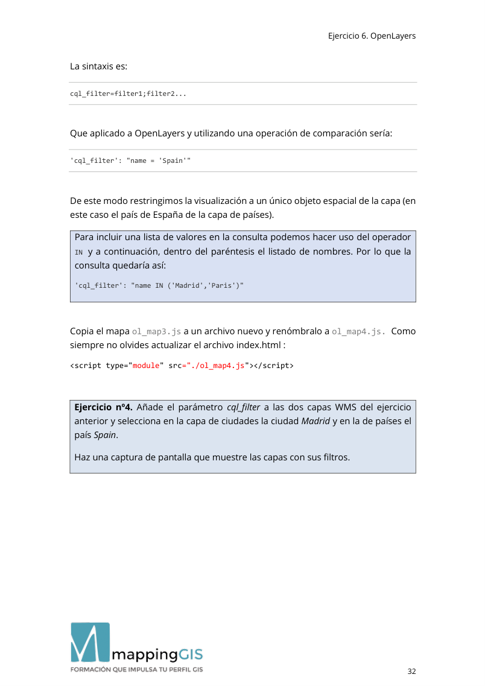
Consultar en el PDF · página 32
Ejercicio 5 · Imagen WMS y ortofoto
Crea un mapa que contenga dos capas WMS: 1. Nuestra capa worldgroup local de tipo Image (Source: ImageWMS). 2. Una nueva denominada IGN de tipo TileLayer (source: TileWMS), que será u na capa con ortoimágenes . U tiliza los siguientes parámetros del servidor: url: 'https://www.ign.es/wms-inspire/pnoa-ma', LAYERS': 'OI.OrthoimageCoverage', TRANSPARENT: 'true'
Pasos y contexto originales de la clase
Página 32
Ejercicio 6. OpenLayers
32
La sintaxis es:
cql_filter=filter1;filter2...
Que aplicado a OpenLayers y utilizando una operación de comparación sería:
'cql_filter': "name = 'Spain'"
De este modo restringimos la visualización a un único objeto espacial de la capa (en
este caso el país de España de la capa de países).
Para incluir una lista de valores en la consulta podemos hacer uso del operador
IN y a continuación, dentro del paréntesis el listado de nombres. Por lo que la
consulta quedaría así:
'cql_filter': "name IN ('Madrid','Paris')"
Copia el mapa ol_map3.js a un archivo nuevo y renómbralo a ol_map4.js. Como
siempre no olvides actualizar el archivo index.html :
<script type="module" src="./ol_map4.js"></script>
Ejercicio nº 4. Añade el parámetro cql_filter a las dos capas WMS del ejercicio
anterior y selecciona en la capa de ciudades la ciudad Madrid y en la de países el
país Spain.
Haz una captura de pantalla que muestre las capas con sus filtros.
Página 33
Ejercicio 6. OpenLayers
33
Capas teseladas – ol/Tile - Tile
En lugar de una consulta única para toda la extensión de la vista, hay otra manera
para conseguir las imágenes de un servidor WMS.
Hace peticiones de imágenes WMS como si fuera un proveedo r de teselas. Para
hacerlo la fuente calcula la malla de teselas para cada nivel de zoom y lo divide en
teselas, cada una con un cuadro delimitador. Es decir, en lugar de hacer una petición
para una sola imagen, hace una petición para cada tesela. Aunque a priori, parece
una mala estrategia, esto tiene dos beneficios:
El servidor WM S trabaja en piezas más pequeñas de datos y produce pequeñas
imágenes, con lo que el servidor trabaja menos.
Como las teselas tienen el mismo cuadro delimitador ayuda realizar el cacheado de
los datos para peticiones futuras.
Hay dos fuentes posibles para servidores WMS
ol/source/TileWMS
ol/source/ImageWMS
Tanto ol/source/ImageWMS y ol/source/ TileWMS aceptan los siguientes
parámetros:
attributions, crossOrigin, ratio, resolutions
url: La URL del servicio WMS que será consultado
params: es un objeto JavaScript donde podemos especificar muchos de los
parámetros de la operación GetMap, como son LAYERS (obligatorio), VERSION
(por defecto 1.3.0), TRANSPARENT, STYLES, WIDTH, HEIGHT, BBOX, CRS.
Copia el mapa ol_map4.js a un archivo nuevo y renómbralo a ol_map5.js
Importa el módulo:
import TileWMS from 'ol/source/TileWMS.js';
Página 34
Ejercicio 6. OpenLayers
34
Ejercicio nº5. Crea un mapa que contenga dos capas WMS:
1. Nuestra capa worldgroup local de tipo Image (Source: ImageWMS).
2. Una nueva denominada IGN de tipo TileLayer (source: TileWMS), que
será u na capa con ortoimágenes . U tiliza los siguientes parámetros del
servidor:
url: 'https://www.ign.es/wms-inspire/pnoa-ma',
LAYERS': 'OI.OrthoimageCoverage',
TRANSPARENT: 'true'
Haz una captura de pantalla que muestre las dos capas.
Ver página 34 del PDF original, con sus capturas
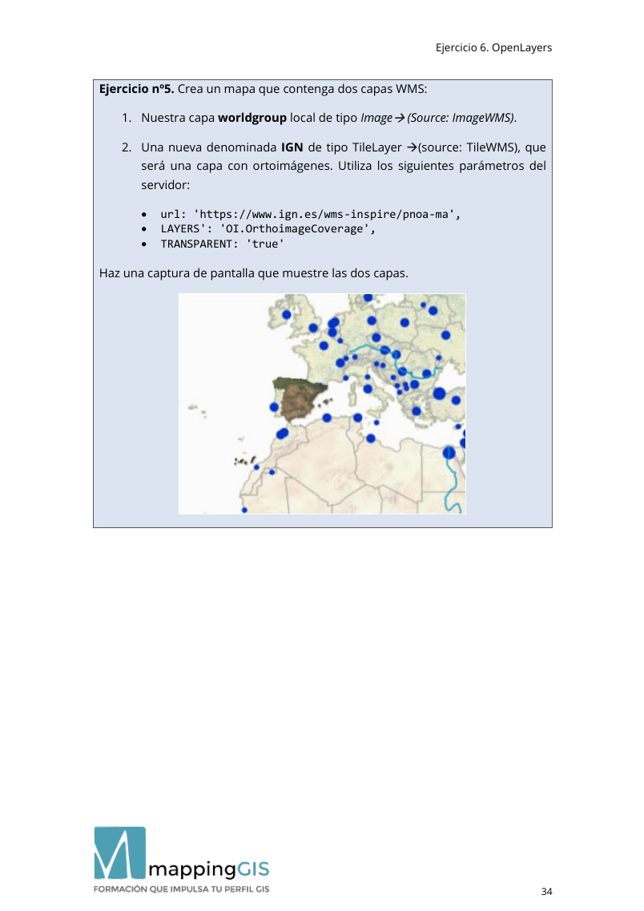
Consultar en el PDF · página 34
Ejercicio 6 · Mapas base
Pega el resultado de tu mapa ( ol_map6.js) en la plantilla de resultados con algunos mapas base.
Pasos y contexto originales de la clase
Página 34
Ejercicio 6. OpenLayers
34
Ejercicio nº5. Crea un mapa que contenga dos capas WMS:
1. Nuestra capa worldgroup local de tipo Image (Source: ImageWMS).
2. Una nueva denominada IGN de tipo TileLayer (source: TileWMS), que
será u na capa con ortoimágenes . U tiliza los siguientes parámetros del
servidor:
url: 'https://www.ign.es/wms-inspire/pnoa-ma',
LAYERS': 'OI.OrthoimageCoverage',
TRANSPARENT: 'true'
Haz una captura de pantalla que muestre las dos capas.
Página 35
Ejercicio 6. OpenLayers
35
Añadiendo capas teseladas de OpenStreetMap, Bing y
OpenTopoMap.
Ya hemos visto cómo se crea una capa de OSM (OpenStreetMap) :
var layerOSM = new TileLayer({
source: new OSM()
});
Los datos recopi lados por OpenStreetMap están disponibles de forma gratuita.
Algunas compañías han usado estos datos para producir sus propios mapas, con
colores y estilos personalizados.
Capas base de Bing Maps (de Microsoft)
import BingMaps from 'ol/source/BingMaps.js';
Del mismo modo que hemos utilizado las capas de OSM podemos añadir las capas
de Bing:
var layerBing = new TileLayer({
source: new BingMaps({
key: 'AuhiCJHlGzhg93IqUH_oCpl_-ZUrIE6SPftlyGYUvr9Amx5nzA-WqGcPquyFZl4L',
imagerySet:'CanvasGray'
})
});
Página 36
Ejercicio 6. OpenLayers
36
La API de Bing requiere que registr emos para una API key para usar en nuestras
aplicaciones de mapas. En este ejemplo hemos utilizado una clave de API que no se
debe utilizar en producción. Para utilizar la capa de Bing en producción, regístrate
en https://www.bingmapsportal.com/
Los mapas de Bing admiten diversos estilos que debemos incluir en el parámetro
imagerySet:
'Aerial'
'AerialWithLabelsOnDemand'
'CanvasDark'
'CanvasLight'
'CanvasGray'
'OrdnanceSurvey'
'RoadOnDemand'
Capas de OpenTopoMap
OpenTopoMap es un proyecto de código abierto que proporciona mapas
topográficos de todo el mundo en formato de teselas . Estos mapas muestran
información detallada sobre topografía, elevación del terreno, cuerpos de agua,
caminos, etc… Al tratarse de datos abiertos están disponibles libremente para su
uso.
En el caso de OpenTopoMap no tenemos un source específico como hem os visto
que tienen OpenStreetMap o Bing. En este caso utilizamos el source XYZ.
import XYZ from 'ol/source/XYZ.js';
Página 37
Ejercicio 6. OpenLayers
37
La fuente XYZ se utiliza para datos de mosaicos a los que se accede a través de URL
que incluyen un nivel de zoom y coordenadas x/y de cuadrículas de mosaicos.
var openTopoMapLayer = new TileLayer({
source: new XYZ({
url: 'https://tile.opentopomap.org/{z}/{x}/{y}.png',
attributions: '© OpenTopoMap'
})
});
Otras fuentes de datos
Openlayers dispone clases para utilizar otras fuentes de datos como CartoDB,
StadiaMaps, mapguide… Estos recursos, no son libres, y por tanto están sometidos
a condiciones de uso. Deberás, por lo tanto, ver cuáles son sus condiciones antes
de emplearlos en producción. Por ejemplo, los mapas de Stamen que han sido muy
utilizados, por proporcionar vistas “artísticas” de los mapas, has pasado a depender
de Stadia. Las condiciones de uso han cambiado, y ahora estos mapas solo son
libres para uso en local. Si queremos utilizarlos en un servicio web deberemos
aceptar sus condiciones.
Haz una copia del archivo ol_map1.js y renómbralo a ol_map6.js
Utiliza la capa que desees en tu mapa (OSM, OpenTopoMap o Bing):
//Creando las capas
var layerBing = new…
//creando el mapa
const map = new Map({
target: 'map',
layers: [layerBing],
view: miVista
})
Ejercicio nº 6. Pega el resultado de tu mapa ( ol_map6.js) en la plantilla de
resultados con algunos mapas base.
Ver página 37 del PDF original, con sus capturas
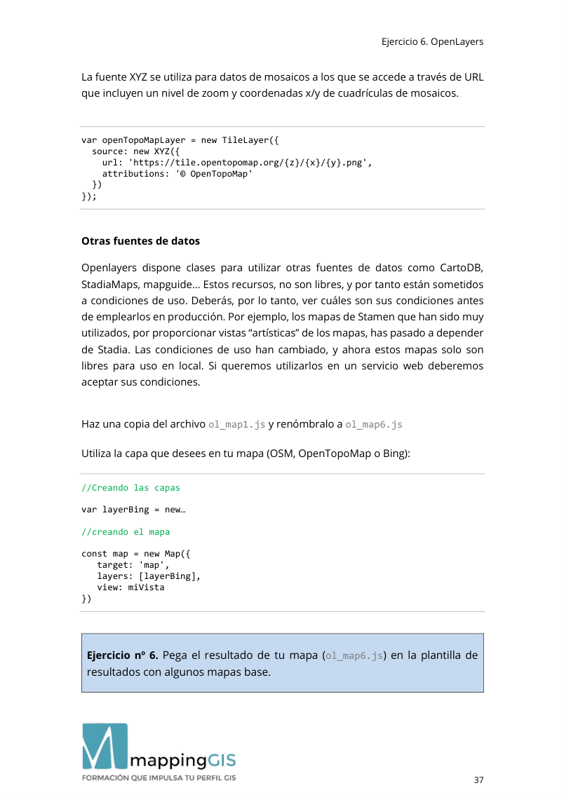
Consultar en el PDF · página 37
Ejercicio 7 · Capa WFS
Haz una captura de pantalla con el resultado.
Pasos y contexto originales de la clase
Página 37
Ejercicio 6. OpenLayers
37
La fuente XYZ se utiliza para datos de mosaicos a los que se accede a través de URL
que incluyen un nivel de zoom y coordenadas x/y de cuadrículas de mosaicos.
var openTopoMapLayer = new TileLayer({
source: new XYZ({
url: 'https://tile.opentopomap.org/{z}/{x}/{y}.png',
attributions: '© OpenTopoMap'
})
});
Otras fuentes de datos
Openlayers dispone clases para utilizar otras fuentes de datos como CartoDB,
StadiaMaps, mapguide… Estos recursos, no son libres, y por tanto están sometidos
a condiciones de uso. Deberás, por lo tanto, ver cuáles son sus condiciones antes
de emplearlos en producción. Por ejemplo, los mapas de Stamen que han sido muy
utilizados, por proporcionar vistas “artísticas” de los mapas, has pasado a depender
de Stadia. Las condiciones de uso han cambiado, y ahora estos mapas solo son
libres para uso en local. Si queremos utilizarlos en un servicio web deberemos
aceptar sus condiciones.
Haz una copia del archivo ol_map1.js y renómbralo a ol_map6.js
Utiliza la capa que desees en tu mapa (OSM, OpenTopoMap o Bing):
//Creando las capas
var layerBing = new…
//creando el mapa
const map = new Map({
target: 'map',
layers: [layerBing],
view: miVista
})
Ejercicio nº 6. Pega el resultado de tu mapa ( ol_map6.js) en la plantilla de
resultados con algunos mapas base.
Página 38
Ejercicio 6. OpenLayers
38
Capas vectoriales
Añadiendo capas vectoriales WFS
Cuando trabajamos con capas vectoriales WFS, la renderización y visualización se
realiza en el navegador del usuario que navegue por el mapa web.
Haz una copia del archivo ol_map1.js y renómbralo a ol_map7.js
Debemos importar los módulos para las capas vectoriales:
import VectorLayer from 'ol/layer/Vector.js';
import VectorSource from 'ol/source/Vector.js';
import GeoJSON from 'ol/format/GeoJSON.js';
Vamos a añadir nuestra capa vectorial cities desde GeoServer como WFS.
Las capas vectoriales GeoJSON se representan mediante la clase ol/layer/Vector
y maneja la visualización de los datos vectoriales en el lado del cliente.
Vamos a aprender cómo crear e interactuar con vectores de mapa creados a partir
de objetos GeoJSON.
En primer lugar, añadimos la capa base de OpenStreetMap:
var osm = new TileLayer({
source: new OSM()
});
A continuación creamos la capa vectorial mediante la clase ol.layer.Vector,
utilizando una fuente de datos de tipo vectorial y el formato GeoJSON para su
renderización en el navegador web:
var vector = new VectorLayer({
source: new VectorSource({
format: new GeoJSON(),
url: 'http://localhost:8080/geoserver/earth/wfs?' +
'service=WFS&' +
'version=1.0.0&request=GetFeature&typename=cities&'+
'outputFormat=application/json'
})
});
Página 39
Ejercicio 6. OpenLayers
39
Vamos a ver despacio lo que hemos hecho.
En primer lugar, utilizamos la clase VectorLayer para añadir la capa cities como una
capa de tipo vectorial, esta clase necesita una fuente de datos, como hemos visto
en la teoría.
La fuente de datos será una fuente vectorial: VectorSource.
Esta clase requiere al menos los parámetros format y url.
El formato a utilizar será el GeoJSON:
format: new GeoJSON(),
La url que debemos especificar la obtenemos desde nuestro servidor GeoServer.
Vamos a la sección Datos > Previsualización de capas > y en la capa cities
seleccionamos dentro de la sección WFS > GeoJSON, como se muestra en la
siguiente imagen:
Se abre el archivo cities en formato geoJSON, siendo su enlace:
http://localhost:8080/geoserver/earth/ows?service=WFS&version=1.0.0&request=GetFeature&typeNa
me=earth:cities&maxFeatures=50&outputFormat=application%2Fjson
Esta url tiene un parámetro restrictivo por defecto:
maxFeatures=50
Eliminamos este parámetro y la url queda como en el código anterior, es decir:
Página 40
Ejercicio 6. OpenLayers
40
http://localhost:8080/geoserver/earth/ows?service=WFS&version=1.0.0&request=GetFeatur
e&typeName=earth:cities&outputFormat=application%2Fjson
En segundo lugar, añadimos las dos capas al mapa: la capa de OSM y la vectorial:
const map = new Map({
target: 'map',
layers: [osm, vector],
view: new View({
center:fromLonLat([-4.72, 41.66]),
zoom: 0
})
});
Recuerda que para poder ver la capa WFS GeoServer debe estar funcionando.
Abre el mapa en:
http://localhost:5173/
Ejercicio nº7. Haz una captura de pantalla con el resultado.
Añadiendo capas teseladas vectoriales
Al igual que en el caso anterior, cuando trabajamos con capas teseladas vectoriales,
la renderización y visualización se realiza en el navegador del usuario que navega
por el mapa web.
Ver página 40 del PDF original, con sus capturas
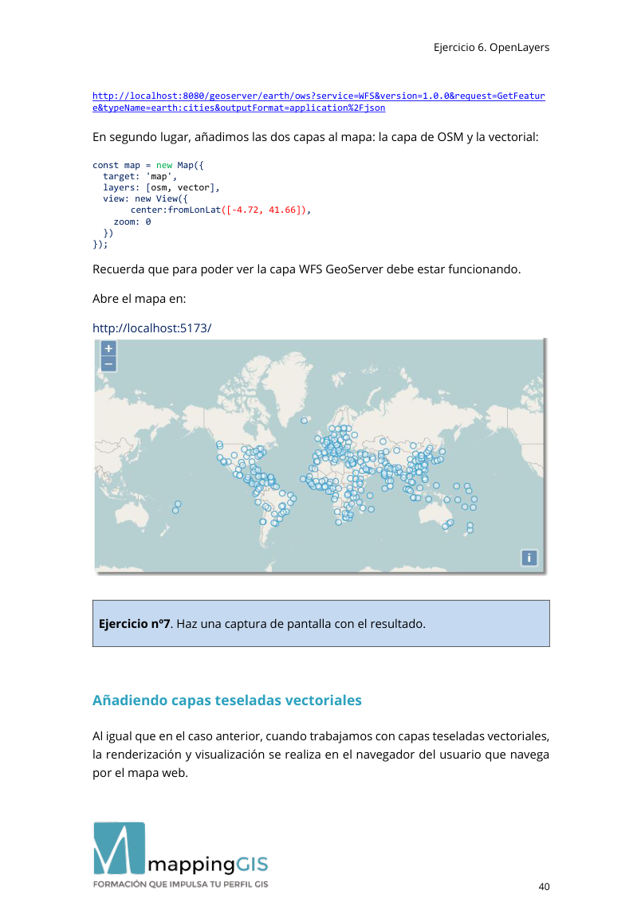
Consultar en el PDF · página 40
Ejercicio 8 · Teselas vectoriales
Haz una captura de pantalla que muestre la capa countries en formato de tipos de datos vectoriales. Ojo! Recuerda que para poder utilizar la capa countries como teselas vectoriales deberás habilitar la opción application/vnd.mapbox-vector-tile, que se encuentra en Cacheado de teselas de Geoserver.
Pasos y contexto originales de la clase
Página 40
Ejercicio 6. OpenLayers
40
http://localhost:8080/geoserver/earth/ows?service=WFS&version=1.0.0&request=GetFeatur
e&typeName=earth:cities&outputFormat=application%2Fjson
En segundo lugar, añadimos las dos capas al mapa: la capa de OSM y la vectorial:
const map = new Map({
target: 'map',
layers: [osm, vector],
view: new View({
center:fromLonLat([-4.72, 41.66]),
zoom: 0
})
});
Recuerda que para poder ver la capa WFS GeoServer debe estar funcionando.
Abre el mapa en:
http://localhost:5173/
Ejercicio nº7. Haz una captura de pantalla con el resultado.
Añadiendo capas teseladas vectoriales
Al igual que en el caso anterior, cuando trabajamos con capas teseladas vectoriales,
la renderización y visualización se realiza en el navegador del usuario que navega
por el mapa web.
Página 41
Ejercicio 6. OpenLayers
41
Vamos a añadir nuestra capa vectorial cities desde GeoServer como capa teselada
vectorial, ya que así la tenemos configurada en GeoServer.
Las capas vectoriales teseladas se representan mediante la clase
ol.layer.VectorTile.
Haz una copia del archivo ol_map7.html y renómbralo a ol_map8.html
Creamos la capa vectorial mediante la clase ol/layer/VectorTile, utilizando una
fuente de datos de tipo vector ol/source/VectorTile y el formato ol/format/MVT para
su renderización en el navegador web:
//import GeoJSON from 'ol/format/GeoJSON';
import VectorTileLayer from 'ol/layer/VectorTile.js';
import VectorTile from 'ol/source/VectorTile.js';
import MVT from 'ol/format/MVT.js';
Con relación al ejercicio número 7 podemos comentar ol/format/GeoJSON pues en
este caso no lo necesitamos.
Una vez que hemo s importado los módulos con las c lases correspondientes
creamos la capa:
var layer1 = new VectorTileLayer({
source: new VectorTile({
format: new MVT(),
url: 'http://localhost:8080/geoserver/gwc/service/tms/1.0.0/' +
'earth:cities' +
'@EPSG:900913'+
'@pbf/{z}/{x}/{-y}.pbf'
})
});
La metodología utilizada es prácticamente igual que en el caso anterior: En primer
lugar, utilizamos la clase ol/layer/VectorTile para añadir la c apa cities como una
capa de tipo vectorial, y como fuente de datos utilizamos una fuente de teselas
vectoriales ol/source/VectorTile y el formato de objetos espaciales para leer los
datos de Mapbox MVT.
La url es diferente puesto que hace referencia al enlace de GeoWebCache que es ,
como vimos en las unidades 3 y 4, el responsable de generar el formato de teselas
vectoriales para cada capa.
Página 42
Ejercicio 6. OpenLayers
42
Ejercicio nº 8. Haz una captura de pantalla que muestre la capa countries en
formato de tipos de datos vectoriales. Ojo! Recuerda que para poder utilizar la
capa countries como teselas vectoriales deberás habilitar la opción
application/vnd.mapbox-vector-tile, que se encuentra en Cacheado de teselas de
Geoserver.
Trabajando con archivos GeoJSON estáticos
En este ejercicio no vamos a trabajar con capas alojadas en el servidor.
Esta opción para crear un visor web de mapas es más rápida que almacenar la capa
en un servidor como GeoServer, y a que podemos alojar el archivo G eoJSON
directamente en un servidor web.
Esto representa una ventaja si no que remos tener una gran infraestructura de
despliegue.
Vamos a crear una capa en formato G eoJSON. Utilizaremos la capa de ciudades
original en formato SHP ne_110m_populated_places.shp.
Para convertir un shapefile a GeoJSON tenemos varias opciones:
1. Utilizar la librería open source ogr2ogr que sirve para convertir datos
vectoriales entre distintos formatos. Esta utilidad se ha instalado con
PostgreSQL y es muy utilizada internamente por programas con Q GIS.
Podemos ejecutar manualmente la utilidad de conversión de shp a GeoJSOn
del siguiente modo:
Ver página 42 del PDF original, con sus capturas
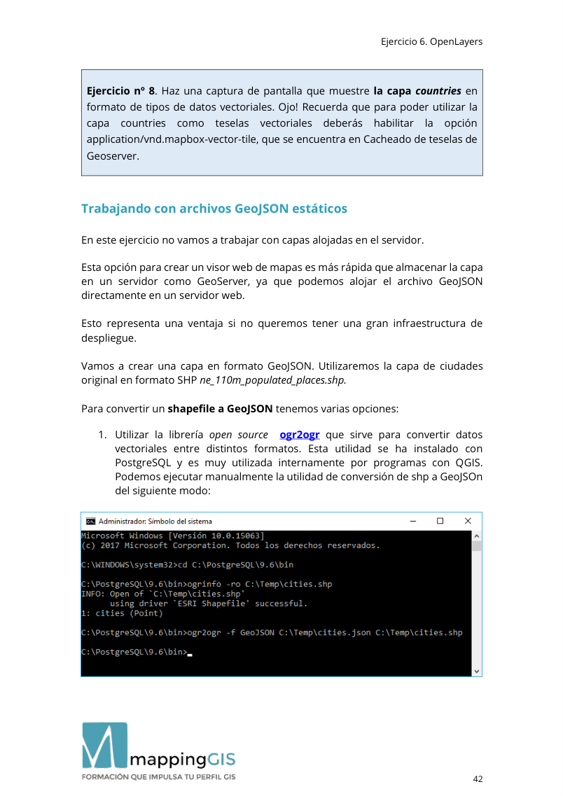
Consultar en el PDF · página 42
Ejercicio 9 · Mapa de calor
Añade como opción el radio de los círculos de tamaño 15 y añade una capa base de tu elección. Haz una captura de pantalla con el resultado.
Pasos y contexto originales de la clase
Página 42
Ejercicio 6. OpenLayers
42
Ejercicio nº 8. Haz una captura de pantalla que muestre la capa countries en
formato de tipos de datos vectoriales. Ojo! Recuerda que para poder utilizar la
capa countries como teselas vectoriales deberás habilitar la opción
application/vnd.mapbox-vector-tile, que se encuentra en Cacheado de teselas de
Geoserver.
Trabajando con archivos GeoJSON estáticos
En este ejercicio no vamos a trabajar con capas alojadas en el servidor.
Esta opción para crear un visor web de mapas es más rápida que almacenar la capa
en un servidor como GeoServer, y a que podemos alojar el archivo G eoJSON
directamente en un servidor web.
Esto representa una ventaja si no que remos tener una gran infraestructura de
despliegue.
Vamos a crear una capa en formato G eoJSON. Utilizaremos la capa de ciudades
original en formato SHP ne_110m_populated_places.shp.
Para convertir un shapefile a GeoJSON tenemos varias opciones:
1. Utilizar la librería open source ogr2ogr que sirve para convertir datos
vectoriales entre distintos formatos. Esta utilidad se ha instalado con
PostgreSQL y es muy utilizada internamente por programas con Q GIS.
Podemos ejecutar manualmente la utilidad de conversión de shp a GeoJSOn
del siguiente modo:
Página 43
Ejercicio 6. OpenLayers
43
2. Utilizar un conversor online:
a. HTML5 Shapefile to GeoJSON Converter. Usa HTML5 y es simple:
arrastra tu shapefile y obtén un GeoJSON.
b. MyGeodata Converter, que acepta hasta 20 formatos de entrada y 8
de salida (ESRI Shapefile, Microstation DGN, MapInfo File, CSV, GML,
GPX, KML y GeoJSON).
3. Utilizar un cliente SIG como QGIS. Desde QGIS añadimos el SHP y a
continuación guardaremos la capa en formato G eoJSON. (Capa > Guardar
como…).
Guarda el nuevo archivo generado en el mismo directorio que los códigos js que
estamos creando. Abre el archivo que hemos creado con el editor de texto y añade
al inicio:
export const cities =
Página 44
Ejercicio 6. OpenLayers
44
Debe quedar algo como lo siguiente:
Guarda el archivo como cities.js
De esta forma estamos exportando la constante cities, lo que nos permite
importarla después en nuestro código.
Creación de un Heat map con la densidad de las ciudades del
mundo
En este ejercicio debes crear un mapa calor utilizando el archivo vectorial que
acabamos de crear.
Haz una copia del archivo ol_map1.js y renómbralo a ol_map9.js
Lo primero como siempre es importar los módulos.
Para crear mapas de calor OpenLayers dispone de capas específicas por lo que la
importamos desde ol/layer/Heatmap, también importamos el recurso
correspondiente (ol/source/Vector) y por último importamos el formato GeoJSON.
Los datos como hemos indicado antes proceden en este caso de un archivo
GeoJSON en lugar de un mapa de GeoServer. Para importar los datos que creamos
antes al exportar el archivo con las ciudades utilizamos:
Página 45
Ejercicio 6. OpenLayers
45
import {cities} from './cities.js';
Debido a que la capa de ciudades no tiene un campo con valor de población en el
rango 0 -1 para poder utilizar la como peso, el mapa renderiza rá las ciudades
mostrando dónde se encuentra la mayor densidad de ciudades.
var heatmap = new Heatmap({
source: new VectorSource({
features: new GeoJSON().readFeatures(cities),
}),
});
En el código anterior hemos instanciado una capa y la hemos denominado heatmap,
cuya fuente es un archivo GeoJSON. Utilizamos el método readFeatures para indicar
que la fuente de datos es cities.
Ahora creamos la instancia al mapa:
const map = new Map({
target: 'map',
layers: [osm, heatmap],
view: new View({
projection:'EPSG:4326',
center:[-4.72, 41.66],
zoom:1
})
});
Como vemos la vista es un poco diferente a los ejemplos anteriores. Aquí estamos
definiendo la proyección EPSG:4326 tal y como hemos definido al exportar la capa
cities.
Modifica el archivo index.html de la siguiente forma:
<script type="module" src="./ol_map9.js"></script>
Visualizalo en:
http://localhost:5173
Ejercicio nº 9. Añade como opción el radio de los círculos de tamaño 15 y añade
una capa base de tu elección. Haz una captura de pantalla con el resultado.
Ver página 45 del PDF original, con sus capturas
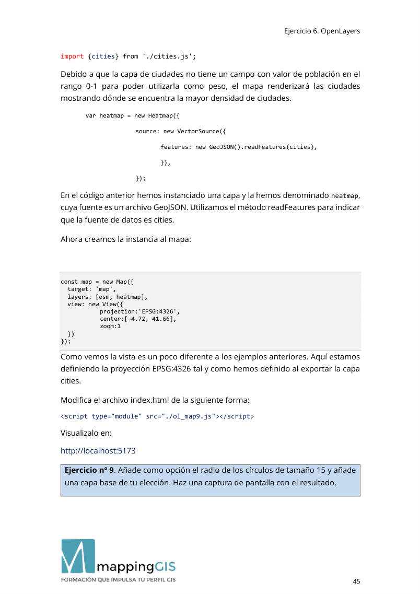
Consultar en el PDF · página 45
Ejercicio 10 · Simbología vectorial
Pega el resultado de tu mapa (ol_map10.js)
Pasos y contexto originales de la clase
Página 45
Ejercicio 6. OpenLayers
45
import {cities} from './cities.js';
Debido a que la capa de ciudades no tiene un campo con valor de población en el
rango 0 -1 para poder utilizar la como peso, el mapa renderiza rá las ciudades
mostrando dónde se encuentra la mayor densidad de ciudades.
var heatmap = new Heatmap({
source: new VectorSource({
features: new GeoJSON().readFeatures(cities),
}),
});
En el código anterior hemos instanciado una capa y la hemos denominado heatmap,
cuya fuente es un archivo GeoJSON. Utilizamos el método readFeatures para indicar
que la fuente de datos es cities.
Ahora creamos la instancia al mapa:
const map = new Map({
target: 'map',
layers: [osm, heatmap],
view: new View({
projection:'EPSG:4326',
center:[-4.72, 41.66],
zoom:1
})
});
Como vemos la vista es un poco diferente a los ejemplos anteriores. Aquí estamos
definiendo la proyección EPSG:4326 tal y como hemos definido al exportar la capa
cities.
Modifica el archivo index.html de la siguiente forma:
<script type="module" src="./ol_map9.js"></script>
Visualizalo en:
http://localhost:5173
Ejercicio nº 9. Añade como opción el radio de los círculos de tamaño 15 y añade
una capa base de tu elección. Haz una captura de pantalla con el resultado.
Página 46
Ejercicio 6. OpenLayers
46
Simbología de capas vectoriales
Trataremos en los siguientes apartados la forma en que podemos asignar
simbología a las capas vectoriales. Vamos a utilizar el mismo código que en un caso
anterior.
1. Copia el archivo js nº7 (ol_map7.js) y guardarlo como ol_map10.js
2. Vamos a definir la simbología para la capa vectorial del tipo ol.layer.Vector.
Añade lo siguiente:
var vector = new VectorLayer({
title:'cities',
source: new VectorSource({
format: new GeoJSON(),
url: 'http://localhost:8080/geoserver/earth/wfs?' +
'service=WFS&' +
'version=1.0.0&request=GetFeature&typename=cities&'+
'outputFormat=application/json'
})
});
La capa vectorial tiene un título (title) ‘cities’, cuyo origen (source) es un vectorial
geoJSON VectorSource (ol/source/Vector) que apunta a una ruta y el formato es
GeoJSON.
Para definir la simbología de una capa vectorial necesitamos utilizar la cl ase
ol/style/Style.
import {Fill, Stroke, Circle, Style} from 'ol/style';
Como puedes observar además de la clase style importamos el resto de clases que
vamos a necesitar; Circle, Fill y Stroke.
Según esto el principio de nuestro código queda de la siguiente forma:
Página 47
Ejercicio 6. OpenLayers
47
Dependiendo del tipo de geometría, se pueden utilizar diferentes simbolizadores.
Las líneas funcionan como los polígonos, pero no pueden tener un relleno.
En este ejercicio vamos a darle simbología a nuestra capa de ciudades, que es de
tipo punto, cómo debemos representarlos : ¿con la clase ol/style/Circle o con
ol/style/Icon?
Actualiza la capa vectorial ya existente para añadir su simbología:
var vector = new VectorLayer({
title:'cities',
source: new VectorSource({
format: new GeoJSON(),
url: 'http://localhost:8080/geoserver/earth/wfs?' +
'service=WFS&' +
'version=1.0.0&request=GetFeature&typename=cities&'+
'outputFormat=application/json'
}),
style: new Style({
image: new Circle({
radius: 3,
fill: new Fill({
color: 'orange'}),
stroke: new Stroke({
color: 'black'})
})
})
});
Para dibujar un objeto geográfico de tipo punto con un color de relleno naranja y
un borde negro, deberemos utilizar dos simbolizadores Fill y Stroke.
Actualiza el index.html.
<script type="module" src="./ol_map10.js"></script>
Ve a http://localhost:5173
Página 48
Ejercicio 6. OpenLayers
48
Ejercicio nº 10. Pega el resultado de tu mapa (ol_map10.js)
Añadiendo texto con una función de estilo
Copia el html anterior y guárdalo como ol_map11.js
En primer lugar, importamos la clase ol/style/Text.js.
Ahora vamos a crear una función de estilo. El siguiente código muestra cómo aplicar
una función de estilo sobre una capa vectorial, renderizando todos los elementos
usando la propiedad NAMEASCII. Observa el uso del método getFeature.
Crea la función antes de crear el objeto vectorial:
Ver página 48 del PDF original, con sus capturas
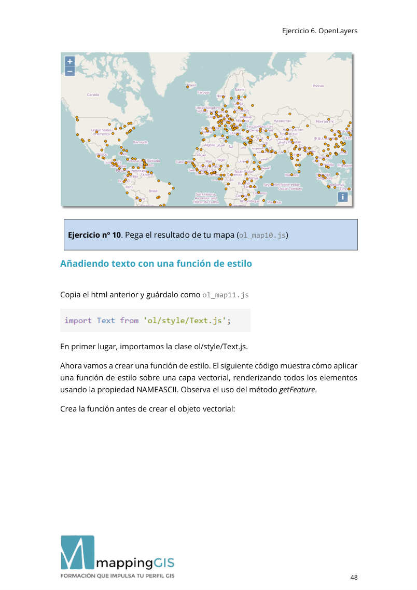
Consultar en el PDF · página 48
Ejercicio 11 · Etiquetas
Pega el resultado de tu mapa (ol_map11.js)
Pasos y contexto originales de la clase
Página 48
Ejercicio 6. OpenLayers
48
Ejercicio nº 10. Pega el resultado de tu mapa (ol_map10.js)
Añadiendo texto con una función de estilo
Copia el html anterior y guárdalo como ol_map11.js
En primer lugar, importamos la clase ol/style/Text.js.
Ahora vamos a crear una función de estilo. El siguiente código muestra cómo aplicar
una función de estilo sobre una capa vectorial, renderizando todos los elementos
usando la propiedad NAMEASCII. Observa el uso del método getFeature.
Crea la función antes de crear el objeto vectorial:
Página 49
Ejercicio 6. OpenLayers
49
var TextStyle = function(feature) {
return [new Style({
text: new Text({
font: '16px Calibri,sans-serif',
text: feature.get('nameascii'),
fill: new Fill({
color: '#000'}),
stroke: new Stroke({
color: '#fff',
width: 1
})
})
})];
};
Y asignamos este estilo a la capa vectorial:
var vector = new VectorLayer({
title: 'cities',
style: TextStyle,
source: new VectorSource({
format: new GeoJSON(),
url: 'http://localhost:8080/geoserver/earth/wfs?' +
'service=WFS&' +
'version=1.0.0&request=GetFeature&typename=cities&'+
'outputFormat=application/json'
})
});
Página 50
Ejercicio 6. OpenLayers
50
De este modo se representará n las etiquetas, pero no su localizaci ón puntual.
Vamos a completar el código para que se muestre un símbolo circular además del
texto con el nombre:
var TextStyle = function(feature) {
return [new Style({
text: new Text({
font: '16px Calibri,sans-serif',
text: feature.get('nameascii'),
fill: new Fill({
color: '#000'}),
stroke: new Stroke({
color: '#fff',
width: 1})
}),
image: new Circle({
radius: 6,
fill: new Fill({
color: 'orange'
}),
stroke: new Stroke({
color: 'black'})
})
})];
};
Ahora bien, si hacemos zoom por el mapa vemos que las etiquetas se solapan .
Página 51
Ejercicio 6. OpenLayers
51
OpenLayers, desde la versión 4.5.0, nos proporciona la opción declutter aplicable
a las capas vectoriales y se usa para evitar la superposición de imágenes y etiquetas
y su correcta representación. Por defecto está desactivado.
Para aplicar el declutter debemos establecerlo como verdadero (declutter:
true). Utilizaremos esta opción en la capa vectorial:
var vector = new VectorLayer({
title: 'cities',
declutter: true,
style: TextStyle,
…
Vuelve a desplazarte por el mapa en una zona con gran concentración de etiquetas
(Europa o América Central) para observar la diferencia.
Ejercicio nº 11. Pega el resultado de tu mapa (ol_map11.js)
Ver página 51 del PDF original, con sus capturas
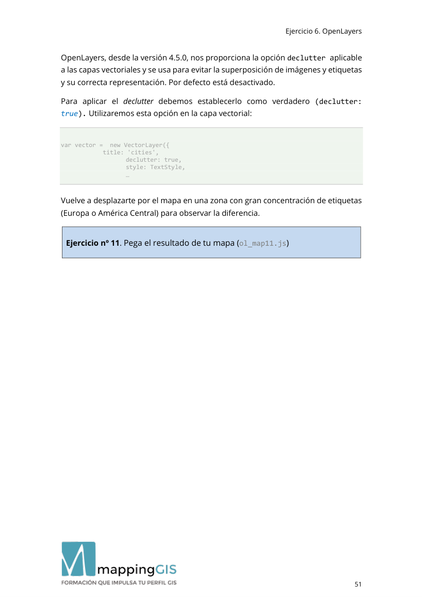
Consultar en el PDF · página 51
Ejercicio 12 · Estilos por atributos
Pega el resultado de tu mapa que contiene la capa cities con su estilo basado en atributos (ol_map12.js).
Pasos y contexto originales de la clase
Página 51
Ejercicio 6. OpenLayers
51
OpenLayers, desde la versión 4.5.0, nos proporciona la opción declutter aplicable
a las capas vectoriales y se usa para evitar la superposición de imágenes y etiquetas
y su correcta representación. Por defecto está desactivado.
Para aplicar el declutter debemos establecerlo como verdadero (declutter:
true). Utilizaremos esta opción en la capa vectorial:
var vector = new VectorLayer({
title: 'cities',
declutter: true,
style: TextStyle,
…
Vuelve a desplazarte por el mapa en una zona con gran concentración de etiquetas
(Europa o América Central) para observar la diferencia.
Ejercicio nº 11. Pega el resultado de tu mapa (ol_map11.js)
Página 52
Ejercicio 6. OpenLayers
52
Estilos basados en atributos
Antes de continuar haz una copia del archivo ol_map11.js y renómbralo a
ol_map12.js para trabajar sobre este último.
Una capa vector ial puede tener una función para la configuración del estilo en el
que se elegirá un estilo diferente basado en los atributos de un elemento.
La función de estilo recibe el argumento feature.
Asumiendo que desea mos aplicar un estil o a todo s los objetos geográficos que
tienen un atributo denominado POP_MAX con valor mayor a 100 .000,
comenzaríamos la función de estilo del siguiente modo:
function(feature) {
if (feature.get('POP_MAX') > 1000000) {
// return the style
}
}
La función de estilo devolverá un array (una colección) de objetos ol/style/Style.
Supongamos que deseamos que todas nuestras ciudades sean de color azul, salvo
aquellas que ten gan su población ( el atributo POP_MAX) con un valor “mayor a
100.000 habitantes” (queremos que estas ciudades además sean de color rojo y con
un radio mayor).
Para comenzar elimina el código correspondiente a la función de estilo TextStyle
Debemos crear una función de estilo como la siguiente:
Página 53
Ejercicio 6. OpenLayers
53
var condStyle = function(feature) {
var smallcities = [new Style({
image: new Circle({
radius: 2.5,
fill: new Fill({color: 'blue'})
})
})
];
var largecities = [new Style({
image: new Circle({
radius: 3.5,
fill: new Fill({color: 'red'})
})
})
];
if (feature.get('pop_max') > 1000000) {
return largecities;
} else {
return smallcities;
}
};
Añade este estilo a la capa vectorial:
var vector = new VectorLayer({
title: 'cities',
declutter: true,
style: condStyle,
source: ...
});
¿Qué hemos hecho en esta función?
En primer lugar, hemos creado dos variables, una variable que se denomina
smallcities que encapsula un estilo de color azul y radio 2.5. La segunda variable
denominada largecities tiene una simbología de relleno rojo y radio 3.5.
Por último, hemos creado la función en la que creamos la condición. Si la población
es mayor a 100.000 habitantes utiliza el estilo de la variable largecities, y si no se
cumple esta condición, entonces debe utilizar la variable smallcities
Actualiza index.html
<script type="module" src="./ol_map12.js"></script>
Ve a http://localhost:5173
Página 54
Ver página 54 del PDF original, con sus capturas
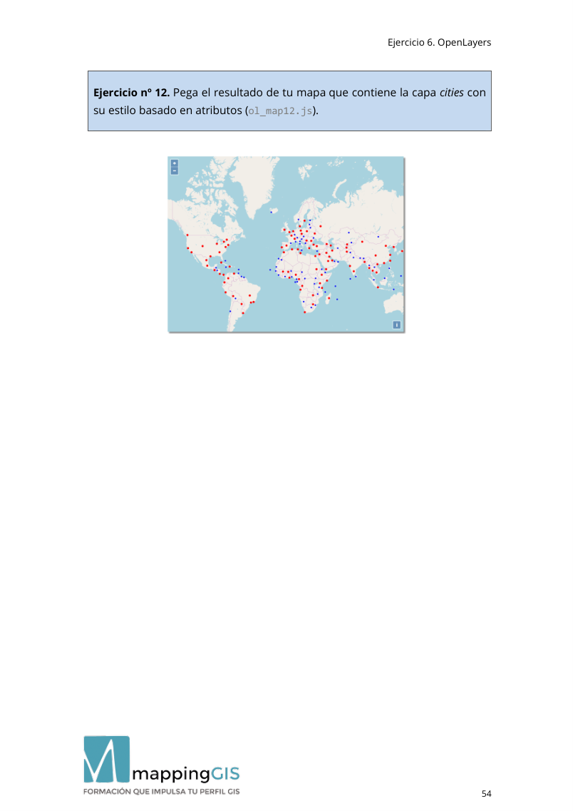
Consultar en el PDF · página 54
Ejercicio 13 · Controles
Añade otros 3 controles: Un control que muestre las coordenadas del ratón. Otro que cambie la vista del mapa a pantalla completa. Un control de escala (ScaleLine). Haz una captura de pantalla con los nuevos controles (ol_map13.js)
Pasos y contexto originales de la clase
Página 54
Ejercicio 6. OpenLayers
54
Ejercicio nº 12. Pega el resultado de tu mapa que contiene la capa cities con
su estilo basado en atributos (ol_map12.js).
Página 55
Ejercicio 6. OpenLayers
55
Controles
En esta sección, vamos a ampliar la funcionalidad del mapa añadiendo más
controles para interactuar y tener más información del mapa.
Copia el mapa ol_map1.js y renómbralo a ol_map13.js
Importamos los controles :
import {defaults, Attribution, OverviewMap, ZoomSlider, ScaleLine, MousePosition,
FullScreen} from 'ol/control.js';
Crearemos un objeto controls que extenderá los controles que tiene O penLayers
por defecto.
Añade el siguiente código:
var controls = defaults().extend( [
new Attribution(),
new OverviewMap({
layers: [
new TileLayer({
source: new OSM()
})
]
}),
new ZoomSlider(),
]);
El control ol/control/Attribution crea un control de atribución:
El control ol/control/OverviewMap crea un mapa de localización con una capa base que
deseemos:
Página 56
Ejercicio 6. OpenLayers
56
El control ol/control/ZoomSlider crea un control deslizante de zoom:
Lo siguiente que tenemos que hacer es indicar al constructor de mapas que ya
tenemos, que utilice estas opciones.
const map = new Map({
controls: controls,
layers:
...
Guarda el archivo y vuelve a cargar en el navegador para ver los cambios.
Página 57
Ejercicio 6. OpenLayers
57
Ejercicio nº 13. Añade otros 3 controles:
Un control que muestre las coordenadas del ratón.
Otro que cambie la vista del mapa a pantalla completa.
Un control de escala (ScaleLine).
Haz una captura de pantalla con los nuevos controles (ol_map13.js)
Vamos modificar las propiedades coordinateFormat y projection del control
MousePosition.
import {createStringXY} from 'ol/coordinate';
Estableceremos a 4 los decimales y las unidades del SRID con el que estamos
trabajando:
new MousePosition({
coordinateFormat: createStringXY(4),
projection: 'EPSG:4326'
})
En la etiqueta de un mismo documento, añadiremos unas declaraciones de estilo
CSS para modificar a fuente del texto referente al control de posición del ratón.
Si abrimos la hoja de estilo CSS de O penLayers con el navegador
(https://openlayers.org/en/master/css/ol.css) vemos que existe un selector de estilo
predefinido para este control:
.ol-mouse-position {
top:8px;
right:8px;
position:absolute
}
Por lo tanto, podemos agregar nuevas propiedades y valores al selector ol-mouse-
position:
Ver página 57 del PDF original, con sus capturas
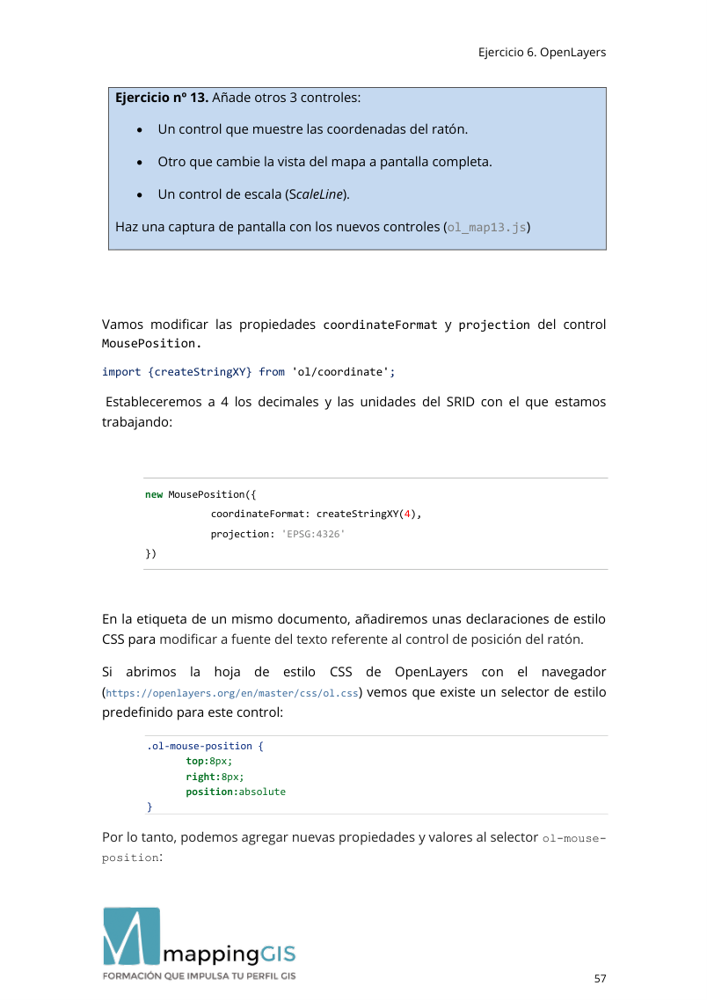
Consultar en el PDF · página 57
Ejercicio 14 · Selector de capas
Haz una captura de pantalla con el visor web que contenga el nuevo control de visibilidad de capas.
Pasos y contexto originales de la clase
Página 57
Ejercicio 6. OpenLayers
57
Ejercicio nº 13. Añade otros 3 controles:
Un control que muestre las coordenadas del ratón.
Otro que cambie la vista del mapa a pantalla completa.
Un control de escala (ScaleLine).
Haz una captura de pantalla con los nuevos controles (ol_map13.js)
Vamos modificar las propiedades coordinateFormat y projection del control
MousePosition.
import {createStringXY} from 'ol/coordinate';
Estableceremos a 4 los decimales y las unidades del SRID con el que estamos
trabajando:
new MousePosition({
coordinateFormat: createStringXY(4),
projection: 'EPSG:4326'
})
En la etiqueta de un mismo documento, añadiremos unas declaraciones de estilo
CSS para modificar a fuente del texto referente al control de posición del ratón.
Si abrimos la hoja de estilo CSS de O penLayers con el navegador
(https://openlayers.org/en/master/css/ol.css) vemos que existe un selector de estilo
predefinido para este control:
.ol-mouse-position {
top:8px;
right:8px;
position:absolute
}
Por lo tanto, podemos agregar nuevas propiedades y valores al selector ol-mouse-
position:
Página 58
Ejercicio 6. OpenLayers
58
<style>
#map {
width: 100%;
height: 400px;
box-shadow:5px 5px 5px #888;
}
.ol-mouse-position {
font-size: 12px;
font-family: Arial Black;
}
</style>
Añade estos cambios en index.html, guarda los cambios y actualiza la página en el
navegador.
Añadiendo un control de capas - layerswitcher
Una de las principales carencias de OpenLayers es la ausencia de un control de
capas en el núcleo de OpenLayers.
Veamos cómo podemos solucionar este pequeño inconveniente y cómo integrar un
control de capas en nuestros mapas web.
ol3-layerswitcher
Matt Walker ha desarrollado una clase nueva ( ol/control/LayerSwitcher) para
añadir un control de capas en OpenLayers.
Haz una copia del archivo ol_map1.js y renómbralo a ol_map14.js
La información sobre el complemento la tenemos en :
https://github.com/walkermatt/ol-layerswitcher
Tenemos que instalar el complemento ol.layerswitcher.
Abre una nueva terminal y escribe:
npm install ol-layerswitcher --save
Página 59
Ejercicio 6. OpenLayers
59
Con esta operación se nos crean nuevos módulos. El plugin ol.layerswitcher
contiene un archivo de estilos css:
Incorporamos este archivo css a nuestro código:
import 'ol-layerswitcher/src/ol-layerswitcher.css';
Procedemos a importar las clases del complemento:
import LayerSwitcher from 'ol-layerswitcher';
import { BaseLayerOptions, GroupLayerOptions } from 'ol-layerswitcher';
Para poder utilizar esta nueva clase es necesario agrupar las capas en Grupos, por
lo tanto, es necesario utilizar la clase ol/layer/Group.
import LayerGroup from 'ol/layer/Group.js';
Página 60
Ejercicio 6. OpenLayers
60
Vemos en la imagen anterior los módulos que vamos a necesitar en este ejemplo.
Para tener varias capas con las que trabajar incluimos XYZ para OpenTopoMap y
OSM.
Además, tanto los grupos de capas, como las capas en sí, deben tener la
propiedad title (que será el texto que se muestre en el control de capas) y en cada
capa base la propiedad type fijada como base.
Veamos cómo quedaría el código para las capas. Primero creamos el objeto mapa,
y dentro de la propiedad layers creamos el grupo, que incluirá las capas que
deseemos:
var map = new Map({
layers:
[new LayerGroup({
'title': 'Base maps',
layers: [
new TileLayer({
title: 'OpenTopoMap',
type: 'base',
visible: true,
source: new XYZ({
url: 'https://tile.opentopomap.org/{z}/{x}/{y}.png',
attributions: '© OpenTopoMaplor'
})
})
...
En el código anterior vemos como la propiedad visible está fijada como true. Solo
una de las capas base debe tener la propiedad fijada como true, que será la que
queremos mostrar cuando se inicie el mapa.
A continuación, creamos otro grupo de capas para las capas superpuestas:
Página 61
Ejercicio 6. OpenLayers
61
new LayerGroup({
title: 'Overlays',
layers: [
new TileLayer({
title: 'Countries',
source: new TileWMS({
url: 'http://localhost:8080/geoserver/wms',
params: {
'LAYERS': 'earth:countries',
‘FORMAT’: ‘image/png’
}
})
})
]
})
Por último, creamos un objeto layerSwitcher:
var layerSwitcher = new LayerSwitcher();
Añadimos el control al mapa:
map.addControl(layerSwitcher);
Si deseamos que el mapa se inicie con el control de capas desplegado podemos
hacer uso del método showPanel. Para ello incluimos:
layerSwitcher.showPanel();
El código completo quedaría de la siguiente manera:
Página 62
Ejercicio 6. OpenLayers
62
import './style.css';
import 'ol-layerswitcher/src/ol-layerswitcher.css';
import Map from 'ol/Map.js';
import View from 'ol/View.js';
import LayerGroup from 'ol/layer/Group.js';
import TileLayer from 'ol/layer/Tile.js';
import OSM from 'ol/source/OSM.js';
import XYZ from 'ol/source/XYZ.js';//OpenTopoMap
import TileWMS from 'ol/source/TileWMS.js';
import {fromLonLat} from 'ol/proj';
import LayerSwitcher from 'ol-layerswitcher';
import { BaseLayerOptions, GroupLayerOptions } from 'ol-layerswitcher';
var map = new Map({
layers:
[new LayerGroup({
'title': 'Base maps',
layers: [
new TileLayer({
title: 'OpenTopoMap',
type: 'base',
visible: true,
source: new XYZ({
url:
'https://tile.opentopomap.org/{z}/{x}/{y}.png',
attributions: '© OpenTopoMaplor'
})
}),
new TileLayer({
title: 'OSM',
type: 'base',
visible: false,
source: new OSM()
})
]
}),
new LayerGroup({
title: 'Overlays',
layers: [
new TileLayer({
title: 'Countries',
source: new TileWMS({
url:
'http://localhost:8080/geoserver/wms',
params: {
'LAYERS': 'earth:countries',
'FORMAT': 'image/png'
}
})
})
]
})
],
target: 'map',
Página 63
Ejercicio 6. OpenLayers
63
view: new View({
center: fromLonLat([-4.72, 41.66]),
zoom: 3
})
});
var layerSwitcher = new LayerSwitcher();
map.addControl(layerSwitcher);
layerSwitcher.showPanel();
Ejercicio nº 1 4. Haz una captura de pantalla con el visor web que contenga el
nuevo control de visibilidad de capas.
Ver página 63 del PDF original, con sus capturas
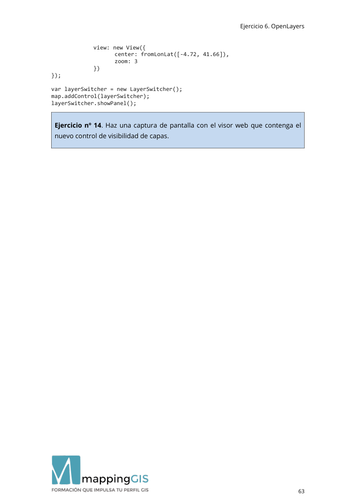
Consultar en el PDF · página 63
Ejercicio 15 · Selección
Pega el resultado de tu mapa ( ol_map15.js) en la plantilla de resultados.
Pasos y contexto originales de la clase
Página 63
Ejercicio 6. OpenLayers
63
view: new View({
center: fromLonLat([-4.72, 41.66]),
zoom: 3
})
});
var layerSwitcher = new LayerSwitcher();
map.addControl(layerSwitcher);
layerSwitcher.showPanel();
Ejercicio nº 1 4. Haz una captura de pantalla con el visor web que contenga el
nuevo control de visibilidad de capas.
Página 64
Ejercicio 6. OpenLayers
64
Interacciones
En esta sección, vamos a ampliar la funcionalidad del mapa añadiendo una nueva
interacción.
Selección de objetos geográficos
Haz una copia del mapa ol_map10.js y renómbralo a ol_map15.js
En ese mapa tenemos la capa ciudades en formato vectorial sobre la capa base de
OSM.
Importamos los módulos para la interacción:
import {defaults} from 'ol/interaction/defaults';
import Select from 'ol/interaction/Select.js';
En las propiedades del objeto mapa vamos a añadir una propiedad nueva, la
propiedad interaction. La añadiremos después de la vista:
const map = new Map({
…
view: new View({
center:fromLonLat([-4.72, 41.66]),
zoom: 2
}),
interactions: defaults().extend([new Select()])
});
Utilizamos las propiedades por defecto de interactions, es decir defaults() y sobre
ella aplicamos el método extender para añadir una nueva interacción, que en este
caso se trata de ol/interaction/Select.
Ahora haz clic sobre una ciudad, se debería seleccionar la ciudad cambiando su
apariencia:
Página 65
Ejercicio 6. OpenLayers
65
Dibujando nuevas geometrías
Haz una copia del mapa anterior y renómbralo a ol_map16.js
import Draw from 'ol/interaction/Draw.js';
Importamos el módulo de dibujo de nuevos elementos.
En primer lugar, vamos a crear al principio del <script>una nueva variable source
para indicar cuál es la fuente de los datos sobre la que dibujaremos las nuevas
geometrías:
var source = new VectorSource({
url: 'http://localhost:8080/geoserver/earth/ows?'+
'service=WFS&version=1.0.0&request=GetFeature&'+
'typeName=earth:cities&'+
'outputFormat=application%2Fjson',
format: new GeoJSON()});
En segundo lugar, especificaremos que la capa vectorial debe utilizar esta fuente:
Ejercicio nº 1 5. Pega el resultado de tu mapa ( ol_map15.js) en la plantilla de
resultados.
Ver página 65 del PDF original, con sus capturas
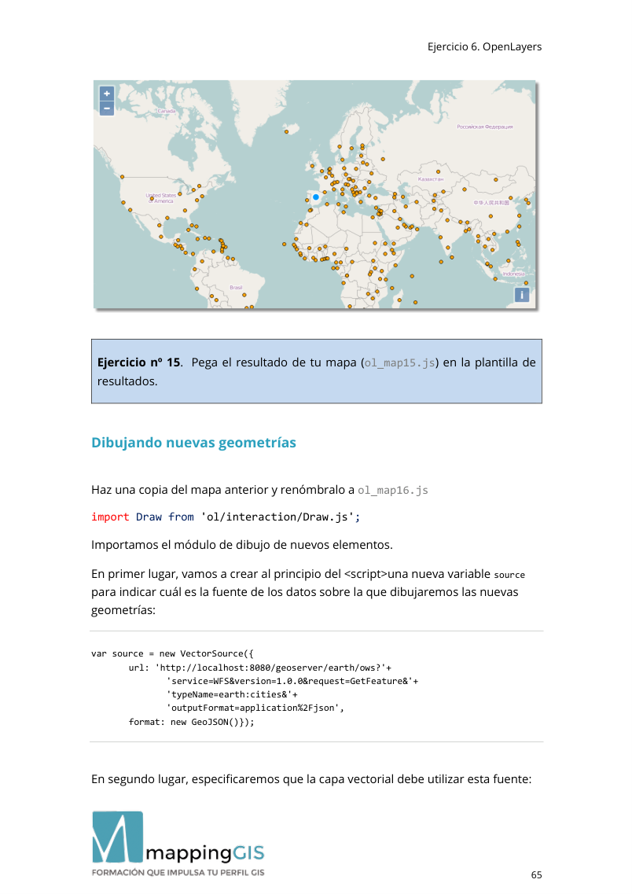
Consultar en el PDF · página 65
Ejercicio 16 · Dibujo
Pega el resultado de tu mapa (ol_map16.js) con algunos puntos en la plantilla de resultados.
Pasos y contexto originales de la clase
Página 65
Ejercicio 6. OpenLayers
65
Dibujando nuevas geometrías
Haz una copia del mapa anterior y renómbralo a ol_map16.js
import Draw from 'ol/interaction/Draw.js';
Importamos el módulo de dibujo de nuevos elementos.
En primer lugar, vamos a crear al principio del <script>una nueva variable source
para indicar cuál es la fuente de los datos sobre la que dibujaremos las nuevas
geometrías:
var source = new VectorSource({
url: 'http://localhost:8080/geoserver/earth/ows?'+
'service=WFS&version=1.0.0&request=GetFeature&'+
'typeName=earth:cities&'+
'outputFormat=application%2Fjson',
format: new GeoJSON()});
En segundo lugar, especificaremos que la capa vectorial debe utilizar esta fuente:
Ejercicio nº 1 5. Pega el resultado de tu mapa ( ol_map15.js) en la plantilla de
resultados.
Página 66
Ejercicio 6. OpenLayers
66
var vector = new VectorLayer({
title: 'cities',
source: source,
style: ...
...
});
A continuación, creamos la instancia de dibujo, especificando las propiedades
obligatorias source y Type:
var draw = new Draw({
source: source,
type: 'Point'
});
Y por último modificamos la propiedad interaction para indicar que queremos crear
una interacción de dibujo:
const map = new Map({
target: 'map',
layers: [osm, vector],
view: new View({
center:fromLonLat([-4.72, 41.66]),
zoom: 2
}),
interactions: defaults().extend([draw])
});
Listo, guarda el código y ve al mapa para crear nuevas ciudades.
Página 67
Ver página 67 del PDF original, con sus capturas
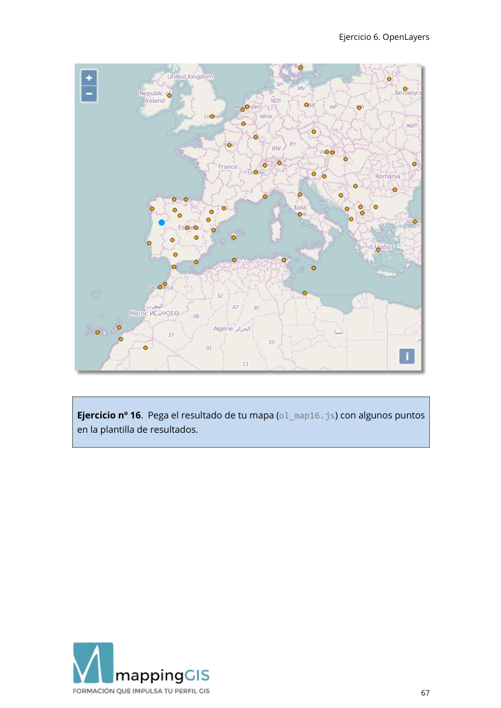